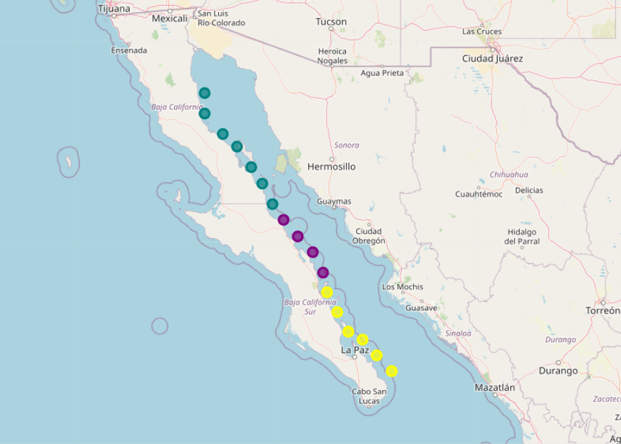
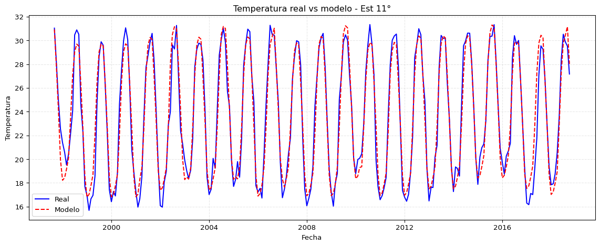
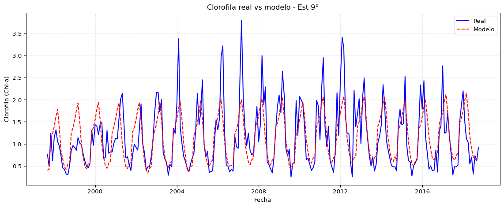

Resumen de métricas por estación:
temp_mean temp_std cloro_mean cloro_std
Est 1° 26.447088 3.564707 0.409410 0.297238
Est 2° 26.294887 3.630608 0.485911 0.366888
Est 3° 25.941770 3.686929 0.570204 0.396711
Est 4° 25.621265 3.703365 0.791891 0.549020
Est 5° 25.675794 3.974489 0.839678 0.691200
Est 6° 25.556581 4.140132 0.930585 0.661985
Est 7° 25.209208 4.406259 0.807453 0.554555
Est 8° 24.953863 4.679728 0.821802 0.542986
Est 9° 24.685630 4.719430 1.151743 0.700019
Est 10° 24.240333 4.881586 1.353704 0.779083
Est 11° 23.592646 5.089866 1.550120 0.830237
Est 12° 22.499705 4.949527 2.341487 1.555169
Est 13° 22.665441 4.922996 1.930828 1.146268
Est 14° 23.033832 5.656582 1.449363 0.837153
Est 15° 23.757513 4.997002 1.402819 1.048025
Est 16° 23.861711 5.178802 1.834102 1.244504
Est 17° 24.228451 5.259505 1.954616 1.070397Regresión lineal
Con el objetivo de analizar la relación entre la temperatura superficial del mar (TSM) y la concentración de clorofila a (Chl-a), se construyó un resumen estadístico por estación, que incluye la media y desviación estándar tanto de la temperatura como de la clorofila. Este resumen proporciona una primera aproximación al comportamiento espacial de ambas variables y servirá como referencia para comparar patrones y relaciones.
Identificación de grupos de estaciones mediante clustering
Antes de ajustar el modelo de regresión, se buscó identificar grupos de estaciones con características similares en cuanto a sus promedios de temperatura y clorofila. Para ello, se aplicó un análisis de clustering con K-means, utilizando como variables las métricas resumen por estación: media y desviación estándar tanto de la temperatura (TSM) como de la clorofila a (Chl-a).
Los datos fueron previamente escalados para asegurar que todas las variables numéricas tuvieran igual peso en el agrupamiento, eliminando efectos de escala.
Para determinar el número óptimo de clústeres, se aplicó el método del codo. La gráfica resultante muestra una disminución pronunciada de la inercia hasta \(k=3\), donde comienza a estabilizarse, indicando que tres grupos representan una buena partición de las estaciones sin sobreajustar el modelo.
Una vez determinado que tres grupos representan una buena estructura de los datos, se aplicó el algoritmo K-means con \(k=3\) sobre las estaciones, utilizando como variables de entrada la temperatura media y la clorofila media de cada una.
Clusters asignados por estación:
cluster
Est 1° 2
Est 2° 2
Est 3° 2
Est 4° 2
Est 5° 2
Est 6° 2
Est 7° 0
Est 8° 0
Est 9° 0
Est 10° 0
Est 11° 1
Est 12° 1
Est 13° 1
Est 14° 1
Est 15° 1
Est 16° 1
Est 17° 1Se pueden observar tres patrones bien diferenciados:
Un grupo con altas concentraciones de clorofila y temperaturas relativamente bajas, lo que podría corresponder a zonas más productivas del norte o afectadas por surgencias.
Un segundo grupo con valores intermedios en ambas variables.
Un tercer grupo con temperaturas más altas y clorofila más baja, típicamente asociado a regiones más cálidas y menos productivas del sur del Golfo.
Distribución espacial de los clústeres de estaciones
Para comprender mejor la organización geográfica de los grupos de estaciones obtenidos mediante clustering, se integraron las coordenadas geográficas de cada punto de muestreo con los resultados del modelo K-means.
Se construyó un mapa interactivo en Folium que representa cada estación como un marcador circular, coloreado según su grupo asignado. Los tres colores identifican los clústeres determinados previamente a partir de los promedios de temperatura y clorofila.
Esta representación revela un patrón espacial claro:
Las estaciones clasificadas en el clúster de alta clorofila y baja temperatura tienden a ubicarse en el norte del Golfo de California.
El clúster de temperatura alta y clorofila baja se concentra en la zona sur, reflejando condiciones más cálidas y oligotróficas.
El grupo intermedio ocupa principalmente zonas transicionales, lo que sugiere una mezcla de condiciones físicas y biológicas.

Promedios por estación y evento interanual (ENSO)
Aunque previamente analizamos los promedios generales de temperatura y clorofila por estación, este enfoque puede resultar demasiado generalista. Para obtener una visión más detallada, en esta sección calculamos los promedios por estación diferenciando según el tipo de evento interanual: Niña, Niño y Normal.
La tabla siguiente presenta los valores medios de temperatura superficial del mar (TSM) y concentración de clorofila-a registrados en cada estación, estratificados por fase ENSO. Este desglose permite observar cómo se comportan ambas variables ambientales ante las distintas condiciones climáticas interanuales.
Por ejemplo, se puede notar que:
En las estaciones más al norte (Est. 1° a Est. 6°), la temperatura es consistentemente mayor y la clorofila menor en comparación con las estaciones del sur.
En las estaciones del sur (Est. 12° a Est. 17°), los valores de clorofila aumentan notablemente durante eventos Niña, lo que puede reflejar una mayor productividad biológica asociada a condiciones más frías.
| Temp_Niña | Temp_Niño | Temp_Normal | Cloro_Niña | Cloro_Niño | Cloro_Normal | |
|---|---|---|---|---|---|---|
| Estación | ||||||
| Est 1° | 25.668565 | 27.000048 | 26.788991 | 0.528184 | 0.320348 | 0.360006 |
| Est 2° | 25.492887 | 26.762859 | 26.706730 | 0.605644 | 0.402290 | 0.432495 |
| Est 3° | 25.162519 | 26.432059 | 26.321056 | 0.658773 | 0.481936 | 0.546182 |
| Est 4° | 24.847517 | 26.271956 | 25.901759 | 0.939209 | 0.618316 | 0.767630 |
| Est 5° | 24.765900 | 26.226085 | 26.131686 | 0.888224 | 0.726644 | 0.864434 |
| Est 6° | 24.680382 | 26.147634 | 25.959729 | 1.023164 | 0.803911 | 0.925657 |
| Est 7° | 24.242200 | 25.627098 | 25.791635 | 0.905837 | 0.751167 | 0.756273 |
| Est 8° | 23.865273 | 25.412208 | 25.616609 | 0.872161 | 0.861143 | 0.755631 |
| Est 9° | 23.593371 | 25.157298 | 25.343700 | 1.239765 | 1.081416 | 1.117666 |
| Est 10° | 23.085876 | 24.780259 | 24.911595 | 1.365128 | 1.402887 | 1.315080 |
| Est 11° | 22.464639 | 24.228911 | 24.184765 | 1.505289 | 1.651354 | 1.529107 |
| Est 12° | 21.774073 | 23.103482 | 22.766540 | 2.202888 | 2.265436 | 2.504704 |
| Est 13° | 21.804858 | 23.171525 | 23.105062 | 1.836303 | 1.734215 | 2.127039 |
| Est 14° | 22.009455 | 23.061262 | 23.894373 | 1.384775 | 1.550959 | 1.445044 |
| Est 15° | 22.791560 | 23.970098 | 24.459456 | 1.500745 | 1.282895 | 1.389358 |
| Est 16° | 22.852464 | 23.925715 | 24.687854 | 2.009528 | 1.755333 | 1.730179 |
| Est 17° | 23.194612 | 24.100197 | 25.188404 | 2.043554 | 1.987866 | 1.859003 |
Para identificar patrones entre estaciones en función de sus promedios de temperatura y clorofila bajo diferentes fases de ENSO, aplicamos un análisis de clustering. Como paso previo, utilizamos el método del codo para seleccionar el número óptimo de grupos (clusters).
En el gráfico generado se observa claramente el punto de inflexión, lo que sugiere que un número óptimo de clusters sería k = 3.
Distribución de clusters por evento ENSO
La figura muestra los resultados de un análisis de agrupamiento (clustering) aplicado a las estaciones de monitoreo, considerando como variables las temperaturas y concentraciones promedio de clorofila a, separadas por tipo de evento interanual: Niña, Niño y Normal. Se utilizaron 3 clusters determinados previamente mediante el método del codo, y el modelo fue ajustado mediante KMeans.
Cada subgráfico representa el comportamiento de las estaciones bajo un evento ENSO específico. Se observa cómo la relación entre temperatura y clorofila tiende a organizarse en patrones distintos según la fase del evento. Por ejemplo, bajo condiciones Niña y Normal se identifican agrupamientos más diferenciados en términos de temperatura y concentración de clorofila, mientras que durante Niño se advierte una mayor dispersión en algunos clusters, sugiriendo una respuesta más variable entre estaciones.
Notemos que el clúster en amarillo son las estaciones 12 y 13. Las estaciones que menor correlacion muestran con las demas.
Las estaciones 12 y 13 son las mas cercanas al parque nacional marino archipiélago de san lorenzo, lo cual podria ser importante y por eso presentar clorofilas altas.
Regresión lineal por zonas
Con base en la segmentación previa de las estaciones en tres zonas o clusters, se procede a realizar un análisis de regresión lineal simple para cada estación, agrupadas por cluster. Es decir, para cada estación dentro de un cluster, se ajustará un modelo de regresión lineal en el que se busca explicar la temperatura superficial del mar (TSM) a partir de variables categóricas como el año, el evento interanual (ENSO), el mes y la estación del año.
El propósito de esta sección no es construir un modelo predictivo óptimo, sino más bien obtener una visión general de qué variables parecen influir más en la variabilidad de la temperatura en cada estación, dentro del contexto espacial definido por los clusters. En particular, se busca identificar patrones comunes dentro de cada zona y contrastar su comportamiento entre zonas con características térmicas y biológicas distintas.
=== Cluster 0 ===
--- Estación: Est 4° ---
OLS Regression Results
==============================================================================
Dep. Variable: TSM R-squared: 0.942
Model: OLS Adj. R-squared: 0.939
Method: Least Squares F-statistic: 277.8
Date: Mon, 12 May 2025 Prob (F-statistic): 4.66e-139
Time: 16:19:57 Log-Likelihood: -330.63
No. Observations: 254 AIC: 691.3
Df Residuals: 239 BIC: 744.3
Df Model: 14
Covariance Type: nonrobust
==============================================================================================
coef std err t P>|t| [0.025 0.975]
----------------------------------------------------------------------------------------------
const -48.2859 11.475 -4.208 0.000 -70.891 -25.681
AÑO 0.0529 0.010 5.549 0.000 0.034 0.072
EVENTO INTERANUAL_Niña -16.5804 3.816 -4.346 0.000 -24.097 -9.064
EVENTO INTERANUAL_Niño -15.5683 3.826 -4.069 0.000 -23.106 -8.031
EVENTO INTERANUAL_Normal -16.1373 3.836 -4.207 0.000 -23.694 -8.580
MES_Abril -4.8355 0.970 -4.983 0.000 -6.747 -2.924
MES_Agosto -1.4006 0.972 -1.441 0.151 -3.315 0.514
MES_Diciembre -3.3861 0.966 -3.507 0.001 -5.288 -1.484
MES_Enero -5.6070 0.974 -5.757 0.000 -7.526 -3.688
MES_Febrero -6.0353 0.973 -6.200 0.000 -7.953 -4.118
MES_Julio -3.1623 0.971 -3.257 0.001 -5.075 -1.250
MES_Junio -5.3238 0.969 -5.494 0.000 -7.233 -3.415
MES_Marzo -6.2582 0.973 -6.432 0.000 -8.175 -4.342
MES_Mayo -2.7769 0.968 -2.868 0.005 -4.684 -0.869
MES_Noviembre -5.2387 0.969 -5.409 0.000 -7.147 -3.331
MES_Octubre -2.6944 0.971 -2.776 0.006 -4.607 -0.782
MES_Septiembre -1.5672 0.969 -1.617 0.107 -3.477 0.342
ESTACIÓN DEL AÑO_Invierno -15.0284 2.871 -5.234 0.000 -20.685 -9.372
ESTACIÓN DEL AÑO_Otoño -9.5002 2.868 -3.312 0.001 -15.150 -3.850
ESTACIÓN DEL AÑO_Primavera -13.8705 2.870 -4.833 0.000 -19.524 -8.217
ESTACIÓN DEL AÑO_Verano -9.8867 2.870 -3.445 0.001 -15.540 -4.233
==============================================================================
Omnibus: 2.399 Durbin-Watson: 1.245
Prob(Omnibus): 0.301 Jarque-Bera (JB): 2.300
Skew: -0.083 Prob(JB): 0.317
Kurtosis: 3.436 Cond. No. 3.74e+19
==============================================================================
Notes:
[1] Standard Errors assume that the covariance matrix of the errors is correctly specified.
[2] The smallest eigenvalue is 7.31e-31. This might indicate that there are
strong multicollinearity problems or that the design matrix is singular.
--- Estación: Est 5° ---
OLS Regression Results
==============================================================================
Dep. Variable: TSM R-squared: 0.957
Model: OLS Adj. R-squared: 0.955
Method: Least Squares F-statistic: 380.6
Date: Mon, 12 May 2025 Prob (F-statistic): 1.52e-154
Time: 16:19:57 Log-Likelihood: -310.58
No. Observations: 254 AIC: 651.2
Df Residuals: 239 BIC: 704.2
Df Model: 14
Covariance Type: nonrobust
==============================================================================================
coef std err t P>|t| [0.025 0.975]
----------------------------------------------------------------------------------------------
const -54.0820 10.604 -5.100 0.000 -74.971 -33.192
AÑO 0.0577 0.009 6.554 0.000 0.040 0.075
EVENTO INTERANUAL_Niña -18.5627 3.526 -5.265 0.000 -25.509 -11.617
EVENTO INTERANUAL_Niño -17.4982 3.536 -4.949 0.000 -24.464 -10.533
EVENTO INTERANUAL_Normal -18.0211 3.545 -5.083 0.000 -25.005 -11.038
MES_Abril -5.5073 0.897 -6.141 0.000 -7.274 -3.741
MES_Agosto -1.8537 0.898 -2.064 0.040 -3.623 -0.085
MES_Diciembre -4.0439 0.892 -4.532 0.000 -5.802 -2.286
MES_Enero -6.2486 0.900 -6.943 0.000 -8.021 -4.476
MES_Febrero -6.5390 0.900 -7.269 0.000 -8.311 -4.767
MES_Julio -3.4332 0.897 -3.827 0.000 -5.200 -1.666
MES_Junio -5.5939 0.896 -6.247 0.000 -7.358 -3.830
MES_Marzo -6.8263 0.899 -7.592 0.000 -8.597 -5.055
MES_Mayo -3.0354 0.895 -3.392 0.001 -4.798 -1.273
MES_Noviembre -5.9963 0.895 -6.700 0.000 -7.759 -4.233
MES_Octubre -3.2360 0.897 -3.607 0.000 -5.003 -1.469
MES_Septiembre -1.7685 0.896 -1.974 0.049 -3.533 -0.004
ESTACIÓN DEL AÑO_Invierno -16.8315 2.653 -6.344 0.000 -22.058 -11.605
ESTACIÓN DEL AÑO_Otoño -11.0007 2.650 -4.151 0.000 -16.222 -5.780
ESTACIÓN DEL AÑO_Primavera -15.3690 2.652 -5.795 0.000 -20.593 -10.145
ESTACIÓN DEL AÑO_Verano -10.8808 2.652 -4.103 0.000 -16.105 -5.656
==============================================================================
Omnibus: 2.676 Durbin-Watson: 1.219
Prob(Omnibus): 0.262 Jarque-Bera (JB): 2.689
Skew: 0.080 Prob(JB): 0.261
Kurtosis: 3.478 Cond. No. 3.74e+19
==============================================================================
Notes:
[1] Standard Errors assume that the covariance matrix of the errors is correctly specified.
[2] The smallest eigenvalue is 7.31e-31. This might indicate that there are
strong multicollinearity problems or that the design matrix is singular.
--- Estación: Est 6° ---
OLS Regression Results
==============================================================================
Dep. Variable: TSM R-squared: 0.959
Model: OLS Adj. R-squared: 0.957
Method: Least Squares F-statistic: 402.2
Date: Mon, 12 May 2025 Prob (F-statistic): 2.80e-157
Time: 16:19:57 Log-Likelihood: -314.25
No. Observations: 254 AIC: 658.5
Df Residuals: 239 BIC: 711.6
Df Model: 14
Covariance Type: nonrobust
==============================================================================================
coef std err t P>|t| [0.025 0.975]
----------------------------------------------------------------------------------------------
const -53.8890 10.758 -5.009 0.000 -75.082 -32.696
AÑO 0.0575 0.009 6.436 0.000 0.040 0.075
EVENTO INTERANUAL_Niña -18.4388 3.577 -5.155 0.000 -25.486 -11.392
EVENTO INTERANUAL_Niño -17.3632 3.587 -4.840 0.000 -24.430 -10.297
EVENTO INTERANUAL_Normal -18.0870 3.597 -5.029 0.000 -25.172 -11.002
MES_Abril -5.5942 0.910 -6.149 0.000 -7.387 -3.802
MES_Agosto -1.9427 0.911 -2.132 0.034 -3.737 -0.148
MES_Diciembre -4.0986 0.905 -4.528 0.000 -5.882 -2.315
MES_Enero -6.2475 0.913 -6.842 0.000 -8.046 -4.449
MES_Febrero -6.5802 0.913 -7.210 0.000 -8.378 -4.782
MES_Julio -3.3165 0.910 -3.644 0.000 -5.109 -1.524
MES_Junio -5.3065 0.909 -5.841 0.000 -7.096 -3.517
MES_Marzo -7.0607 0.912 -7.741 0.000 -8.858 -5.264
MES_Mayo -2.7807 0.908 -3.063 0.002 -4.569 -0.992
MES_Noviembre -6.0831 0.908 -6.699 0.000 -7.872 -4.294
MES_Octubre -3.2297 0.910 -3.549 0.000 -5.022 -1.437
MES_Septiembre -1.6487 0.909 -1.814 0.071 -3.439 0.142
ESTACIÓN DEL AÑO_Invierno -16.9263 2.692 -6.288 0.000 -22.229 -11.623
ESTACIÓN DEL AÑO_Otoño -10.9615 2.689 -4.077 0.000 -16.258 -5.664
ESTACIÓN DEL AÑO_Primavera -15.4356 2.691 -5.737 0.000 -20.736 -10.135
ESTACIÓN DEL AÑO_Verano -10.5656 2.691 -3.927 0.000 -15.866 -5.265
==============================================================================
Omnibus: 1.237 Durbin-Watson: 1.210
Prob(Omnibus): 0.539 Jarque-Bera (JB): 0.939
Skew: 0.071 Prob(JB): 0.625
Kurtosis: 3.262 Cond. No. 3.74e+19
==============================================================================
Notes:
[1] Standard Errors assume that the covariance matrix of the errors is correctly specified.
[2] The smallest eigenvalue is 7.31e-31. This might indicate that there are
strong multicollinearity problems or that the design matrix is singular.
--- Estación: Est 7° ---
OLS Regression Results
==============================================================================
Dep. Variable: TSM R-squared: 0.964
Model: OLS Adj. R-squared: 0.962
Method: Least Squares F-statistic: 452.5
Date: Mon, 12 May 2025 Prob (F-statistic): 3.72e-163
Time: 16:19:57 Log-Likelihood: -315.66
No. Observations: 254 AIC: 661.3
Df Residuals: 239 BIC: 714.4
Df Model: 14
Covariance Type: nonrobust
==============================================================================================
coef std err t P>|t| [0.025 0.975]
----------------------------------------------------------------------------------------------
const -49.8597 10.818 -4.609 0.000 -71.171 -28.549
AÑO 0.0540 0.009 6.008 0.000 0.036 0.072
EVENTO INTERANUAL_Niña -17.1223 3.597 -4.760 0.000 -24.208 -10.036
EVENTO INTERANUAL_Niño -16.1353 3.607 -4.473 0.000 -23.241 -9.029
EVENTO INTERANUAL_Normal -16.6020 3.617 -4.590 0.000 -23.727 -9.477
MES_Abril -5.1618 0.915 -5.642 0.000 -6.964 -3.360
MES_Agosto -1.3621 0.916 -1.487 0.138 -3.167 0.443
MES_Diciembre -3.9092 0.910 -4.295 0.000 -5.702 -2.116
MES_Enero -6.0080 0.918 -6.544 0.000 -7.817 -4.199
MES_Febrero -6.2868 0.918 -6.851 0.000 -8.095 -4.479
MES_Julio -2.9799 0.915 -3.256 0.001 -4.783 -1.177
MES_Junio -4.9895 0.914 -5.461 0.000 -6.789 -3.190
MES_Marzo -6.9178 0.917 -7.542 0.000 -8.725 -5.111
MES_Mayo -2.3963 0.913 -2.625 0.009 -4.195 -0.598
MES_Noviembre -6.0217 0.913 -6.595 0.000 -7.820 -4.223
MES_Octubre -2.8312 0.915 -3.094 0.002 -4.634 -1.028
MES_Septiembre -0.9952 0.914 -1.089 0.277 -2.795 0.805
ESTACIÓN DEL AÑO_Invierno -16.2041 2.707 -5.986 0.000 -21.537 -10.872
ESTACIÓN DEL AÑO_Otoño -9.8481 2.704 -3.642 0.000 -15.175 -4.522
ESTACIÓN DEL AÑO_Primavera -14.4760 2.706 -5.350 0.000 -19.806 -9.146
ESTACIÓN DEL AÑO_Verano -9.3315 2.706 -3.449 0.001 -14.661 -4.001
==============================================================================
Omnibus: 7.681 Durbin-Watson: 1.224
Prob(Omnibus): 0.021 Jarque-Bera (JB): 7.610
Skew: 0.364 Prob(JB): 0.0223
Kurtosis: 3.435 Cond. No. 3.74e+19
==============================================================================
Notes:
[1] Standard Errors assume that the covariance matrix of the errors is correctly specified.
[2] The smallest eigenvalue is 7.31e-31. This might indicate that there are
strong multicollinearity problems or that the design matrix is singular.
--- Estación: Est 8° ---
OLS Regression Results
==============================================================================
Dep. Variable: TSM R-squared: 0.967
Model: OLS Adj. R-squared: 0.965
Method: Least Squares F-statistic: 498.5
Date: Mon, 12 May 2025 Prob (F-statistic): 5.37e-168
Time: 16:19:57 Log-Likelihood: -319.09
No. Observations: 254 AIC: 668.2
Df Residuals: 239 BIC: 721.2
Df Model: 14
Covariance Type: nonrobust
==============================================================================================
coef std err t P>|t| [0.025 0.975]
----------------------------------------------------------------------------------------------
const -36.6149 10.965 -3.339 0.001 -58.216 -15.014
AÑO 0.0428 0.009 4.706 0.000 0.025 0.061
EVENTO INTERANUAL_Niña -12.7895 3.646 -3.508 0.001 -19.972 -5.607
EVENTO INTERANUAL_Niño -11.6068 3.656 -3.175 0.002 -18.809 -4.404
EVENTO INTERANUAL_Normal -12.2187 3.666 -3.333 0.001 -19.440 -4.997
MES_Abril -4.1061 0.927 -4.428 0.000 -5.933 -2.279
MES_Agosto -0.3270 0.929 -0.352 0.725 -2.156 1.502
MES_Diciembre -3.1086 0.923 -3.369 0.001 -4.926 -1.291
MES_Enero -5.0649 0.931 -5.443 0.000 -6.898 -3.232
MES_Febrero -5.0544 0.930 -5.434 0.000 -6.887 -3.222
MES_Julio -1.7101 0.928 -1.843 0.067 -3.538 0.117
MES_Junio -3.5807 0.926 -3.867 0.000 -5.405 -1.757
MES_Marzo -5.8364 0.930 -6.278 0.000 -7.668 -4.005
MES_Mayo -1.2733 0.925 -1.376 0.170 -3.096 0.549
MES_Noviembre -5.1054 0.925 -5.516 0.000 -6.929 -3.282
MES_Octubre -1.7964 0.928 -1.937 0.054 -3.624 0.031
MES_Septiembre 0.3484 0.926 0.376 0.707 -1.476 2.173
ESTACIÓN DEL AÑO_Invierno -13.2279 2.744 -4.821 0.000 -18.633 -7.823
ESTACIÓN DEL AÑO_Otoño -6.5534 2.741 -2.391 0.018 -11.952 -1.154
ESTACIÓN DEL AÑO_Primavera -11.2158 2.742 -4.090 0.000 -16.618 -5.814
ESTACIÓN DEL AÑO_Verano -5.6178 2.742 -2.048 0.042 -11.020 -0.215
==============================================================================
Omnibus: 7.429 Durbin-Watson: 1.222
Prob(Omnibus): 0.024 Jarque-Bera (JB): 7.466
Skew: 0.342 Prob(JB): 0.0239
Kurtosis: 3.487 Cond. No. 3.74e+19
==============================================================================
Notes:
[1] Standard Errors assume that the covariance matrix of the errors is correctly specified.
[2] The smallest eigenvalue is 7.31e-31. This might indicate that there are
strong multicollinearity problems or that the design matrix is singular.
--- Estación: Est 9° ---
OLS Regression Results
==============================================================================
Dep. Variable: TSM R-squared: 0.962
Model: OLS Adj. R-squared: 0.960
Method: Least Squares F-statistic: 436.3
Date: Mon, 12 May 2025 Prob (F-statistic): 2.44e-161
Time: 16:19:57 Log-Likelihood: -337.56
No. Observations: 254 AIC: 705.1
Df Residuals: 239 BIC: 758.2
Df Model: 14
Covariance Type: nonrobust
==============================================================================================
coef std err t P>|t| [0.025 0.975]
----------------------------------------------------------------------------------------------
const -21.3525 11.792 -1.811 0.071 -44.582 1.877
AÑO 0.0300 0.010 3.068 0.002 0.011 0.049
EVENTO INTERANUAL_Niña -7.7095 3.921 -1.966 0.050 -15.434 0.015
EVENTO INTERANUAL_Niño -6.4922 3.932 -1.651 0.100 -14.238 1.254
EVENTO INTERANUAL_Normal -7.1508 3.942 -1.814 0.071 -14.917 0.615
MES_Abril -2.9674 0.997 -2.976 0.003 -4.932 -1.003
MES_Agosto 0.8495 0.999 0.851 0.396 -1.118 2.817
MES_Diciembre -1.9212 0.992 -1.936 0.054 -3.876 0.033
MES_Enero -3.8439 1.001 -3.841 0.000 -5.815 -1.872
MES_Febrero -3.7104 1.000 -3.709 0.000 -5.681 -1.740
MES_Julio -0.5031 0.998 -0.504 0.615 -2.468 1.462
MES_Junio -2.1056 0.996 -2.114 0.036 -4.067 -0.144
MES_Marzo -4.4102 1.000 -4.411 0.000 -6.380 -2.441
MES_Mayo -0.0009 0.995 -0.001 0.999 -1.961 1.959
MES_Noviembre -3.9928 0.995 -4.012 0.000 -5.953 -2.032
MES_Octubre -0.4150 0.998 -0.416 0.678 -2.380 1.550
MES_Septiembre 1.6685 0.996 1.675 0.095 -0.294 3.631
ESTACIÓN DEL AÑO_Invierno -9.4754 2.951 -3.211 0.002 -15.288 -3.663
ESTACIÓN DEL AÑO_Otoño -2.7393 2.947 -0.929 0.354 -8.545 3.067
ESTACIÓN DEL AÑO_Primavera -7.3785 2.949 -2.502 0.013 -13.188 -1.569
ESTACIÓN DEL AÑO_Verano -1.7592 2.949 -0.596 0.551 -7.569 4.051
==============================================================================
Omnibus: 5.217 Durbin-Watson: 1.225
Prob(Omnibus): 0.074 Jarque-Bera (JB): 6.317
Skew: -0.155 Prob(JB): 0.0425
Kurtosis: 3.707 Cond. No. 3.74e+19
==============================================================================
Notes:
[1] Standard Errors assume that the covariance matrix of the errors is correctly specified.
[2] The smallest eigenvalue is 7.31e-31. This might indicate that there are
strong multicollinearity problems or that the design matrix is singular.
=== Cluster 1 ===
--- Estación: Est 10° ---
OLS Regression Results
==============================================================================
Dep. Variable: TSM R-squared: 0.957
Model: OLS Adj. R-squared: 0.954
Method: Least Squares F-statistic: 378.8
Date: Mon, 12 May 2025 Prob (F-statistic): 2.64e-154
Time: 16:19:57 Log-Likelihood: -363.38
No. Observations: 254 AIC: 756.8
Df Residuals: 239 BIC: 809.8
Df Model: 14
Covariance Type: nonrobust
==============================================================================================
coef std err t P>|t| [0.025 0.975]
----------------------------------------------------------------------------------------------
const -15.0911 13.054 -1.156 0.249 -40.807 10.625
AÑO 0.0246 0.011 2.272 0.024 0.003 0.046
EVENTO INTERANUAL_Niña -5.6705 4.341 -1.306 0.193 -14.221 2.880
EVENTO INTERANUAL_Niño -4.3072 4.353 -0.990 0.323 -12.882 4.268
EVENTO INTERANUAL_Normal -5.1134 4.364 -1.172 0.242 -13.711 3.484
MES_Abril -2.4743 1.104 -2.241 0.026 -4.649 -0.299
MES_Agosto 1.3249 1.106 1.198 0.232 -0.853 3.503
MES_Diciembre -1.3882 1.098 -1.264 0.208 -3.552 0.776
MES_Enero -3.3953 1.108 -3.065 0.002 -5.578 -1.213
MES_Febrero -3.2249 1.107 -2.912 0.004 -5.406 -1.043
MES_Julio 0.3064 1.104 0.277 0.782 -1.869 2.482
MES_Junio -1.5665 1.102 -1.421 0.157 -3.738 0.605
MES_Marzo -3.9893 1.107 -3.604 0.000 -6.170 -1.809
MES_Mayo 0.5849 1.102 0.531 0.596 -1.585 2.755
MES_Noviembre -3.6987 1.102 -3.357 0.001 -5.869 -1.528
MES_Octubre 0.1655 1.104 0.150 0.881 -2.010 2.341
MES_Septiembre 2.2643 1.103 2.053 0.041 0.092 4.437
ESTACIÓN DEL AÑO_Invierno -8.0084 3.266 -2.452 0.015 -14.443 -1.574
ESTACIÓN DEL AÑO_Otoño -1.2688 3.263 -0.389 0.698 -7.696 5.159
ESTACIÓN DEL AÑO_Primavera -5.8787 3.265 -1.801 0.073 -12.310 0.553
ESTACIÓN DEL AÑO_Verano 0.0648 3.265 0.020 0.984 -6.367 6.496
==============================================================================
Omnibus: 5.845 Durbin-Watson: 1.413
Prob(Omnibus): 0.054 Jarque-Bera (JB): 7.691
Skew: -0.143 Prob(JB): 0.0214
Kurtosis: 3.803 Cond. No. 3.74e+19
==============================================================================
Notes:
[1] Standard Errors assume that the covariance matrix of the errors is correctly specified.
[2] The smallest eigenvalue is 7.31e-31. This might indicate that there are
strong multicollinearity problems or that the design matrix is singular.
--- Estación: Est 11° ---
OLS Regression Results
==============================================================================
Dep. Variable: TSM R-squared: 0.950
Model: OLS Adj. R-squared: 0.947
Method: Least Squares F-statistic: 322.8
Date: Mon, 12 May 2025 Prob (F-statistic): 2.04e-146
Time: 16:19:57 Log-Likelihood: -393.35
No. Observations: 254 AIC: 816.7
Df Residuals: 239 BIC: 869.8
Df Model: 14
Covariance Type: nonrobust
==============================================================================================
coef std err t P>|t| [0.025 0.975]
----------------------------------------------------------------------------------------------
const 0.5195 14.689 0.035 0.972 -28.417 29.455
AÑO 0.0113 0.012 0.930 0.353 -0.013 0.035
EVENTO INTERANUAL_Niña -0.4755 4.884 -0.097 0.923 -10.097 9.146
EVENTO INTERANUAL_Niño 0.9448 4.898 0.193 0.847 -8.704 10.593
EVENTO INTERANUAL_Normal 0.0502 4.911 0.010 0.992 -9.623 9.724
MES_Abril -1.6003 1.242 -1.288 0.199 -4.047 0.847
MES_Agosto 2.7020 1.244 2.172 0.031 0.251 5.152
MES_Diciembre -0.2340 1.236 -0.189 0.850 -2.669 2.201
MES_Enero -1.9658 1.247 -1.577 0.116 -4.422 0.490
MES_Febrero -1.7478 1.246 -1.403 0.162 -4.202 0.707
MES_Julio 2.0389 1.243 1.641 0.102 -0.409 4.487
MES_Junio -0.4599 1.240 -0.371 0.711 -2.904 1.984
MES_Marzo -2.5640 1.245 -2.059 0.041 -5.017 -0.111
MES_Mayo 1.7537 1.239 1.415 0.158 -0.688 4.195
MES_Noviembre -2.6821 1.240 -2.163 0.032 -5.124 -0.240
MES_Octubre 1.0679 1.243 0.859 0.391 -1.380 3.516
MES_Septiembre 4.2110 1.241 3.394 0.001 1.767 6.655
ESTACIÓN DEL AÑO_Invierno -3.9476 3.675 -1.074 0.284 -11.188 3.293
ESTACIÓN DEL AÑO_Otoño 2.5968 3.671 0.707 0.480 -4.636 9.829
ESTACIÓN DEL AÑO_Primavera -2.4107 3.674 -0.656 0.512 -9.647 4.826
ESTACIÓN DEL AÑO_Verano 4.2810 3.674 1.165 0.245 -2.956 11.518
==============================================================================
Omnibus: 39.641 Durbin-Watson: 1.184
Prob(Omnibus): 0.000 Jarque-Bera (JB): 89.807
Skew: -0.748 Prob(JB): 3.15e-20
Kurtosis: 5.499 Cond. No. 3.74e+19
==============================================================================
Notes:
[1] Standard Errors assume that the covariance matrix of the errors is correctly specified.
[2] The smallest eigenvalue is 7.31e-31. This might indicate that there are
strong multicollinearity problems or that the design matrix is singular.
--- Estación: Est 12° ---
OLS Regression Results
==============================================================================
Dep. Variable: TSM R-squared: 0.960
Model: OLS Adj. R-squared: 0.958
Method: Least Squares F-statistic: 410.5
Date: Mon, 12 May 2025 Prob (F-statistic): 2.65e-158
Time: 16:19:57 Log-Likelihood: -357.09
No. Observations: 254 AIC: 744.2
Df Residuals: 239 BIC: 797.2
Df Model: 14
Covariance Type: nonrobust
==============================================================================================
coef std err t P>|t| [0.025 0.975]
----------------------------------------------------------------------------------------------
const 24.4701 12.735 1.922 0.056 -0.617 49.557
AÑO -0.0091 0.011 -0.860 0.391 -0.030 0.012
EVENTO INTERANUAL_Niña 7.7838 4.234 1.838 0.067 -0.558 16.125
EVENTO INTERANUAL_Niño 8.6937 4.246 2.047 0.042 0.329 17.059
EVENTO INTERANUAL_Normal 7.9926 4.257 1.877 0.062 -0.394 16.379
MES_Abril 0.6881 1.077 0.639 0.524 -1.434 2.810
MES_Agosto 4.8528 1.078 4.500 0.000 2.728 6.977
MES_Diciembre 2.2768 1.072 2.125 0.035 0.166 4.388
MES_Enero 0.2874 1.081 0.266 0.791 -1.842 2.416
MES_Febrero -0.1862 1.080 -0.172 0.863 -2.314 1.942
MES_Julio 3.4780 1.077 3.228 0.001 1.356 5.600
MES_Junio 1.5372 1.075 1.429 0.154 -0.581 3.656
MES_Marzo -0.4915 1.080 -0.455 0.649 -2.619 1.636
MES_Mayo 2.9762 1.075 2.770 0.006 0.859 5.093
MES_Noviembre -0.4497 1.075 -0.418 0.676 -2.567 1.668
MES_Octubre 3.5447 1.077 3.290 0.001 1.423 5.667
MES_Septiembre 5.9564 1.076 5.537 0.000 3.837 8.076
ESTACIÓN DEL AÑO_Invierno 2.3779 3.186 0.746 0.456 -3.899 8.655
ESTACIÓN DEL AÑO_Otoño 9.0514 3.183 2.844 0.005 2.781 15.322
ESTACIÓN DEL AÑO_Primavera 3.1728 3.185 0.996 0.320 -3.101 9.447
ESTACIÓN DEL AÑO_Verano 9.8680 3.185 3.098 0.002 3.594 16.142
==============================================================================
Omnibus: 17.594 Durbin-Watson: 1.196
Prob(Omnibus): 0.000 Jarque-Bera (JB): 35.519
Skew: 0.339 Prob(JB): 1.94e-08
Kurtosis: 4.702 Cond. No. 3.74e+19
==============================================================================
Notes:
[1] Standard Errors assume that the covariance matrix of the errors is correctly specified.
[2] The smallest eigenvalue is 7.31e-31. This might indicate that there are
strong multicollinearity problems or that the design matrix is singular.
--- Estación: Est 13° ---
OLS Regression Results
==============================================================================
Dep. Variable: TSM R-squared: 0.973
Model: OLS Adj. R-squared: 0.972
Method: Least Squares F-statistic: 624.6
Date: Mon, 12 May 2025 Prob (F-statistic): 2.48e-179
Time: 16:19:57 Log-Likelihood: -304.18
No. Observations: 254 AIC: 638.4
Df Residuals: 239 BIC: 691.4
Df Model: 14
Covariance Type: nonrobust
==============================================================================================
coef std err t P>|t| [0.025 0.975]
----------------------------------------------------------------------------------------------
const 3.3560 10.340 0.325 0.746 -17.013 23.725
AÑO 0.0085 0.009 0.991 0.323 -0.008 0.025
EVENTO INTERANUAL_Niña 0.6380 3.438 0.186 0.853 -6.135 7.411
EVENTO INTERANUAL_Niño 1.5612 3.448 0.453 0.651 -5.231 8.353
EVENTO INTERANUAL_Normal 1.1568 3.457 0.335 0.738 -5.653 7.966
MES_Abril -1.1464 0.874 -1.311 0.191 -2.869 0.576
MES_Agosto 3.3353 0.876 3.809 0.000 1.610 5.060
MES_Diciembre 0.5787 0.870 0.665 0.507 -1.135 2.293
MES_Enero -1.4555 0.878 -1.659 0.099 -3.184 0.273
MES_Febrero -1.9596 0.877 -2.234 0.026 -3.687 -0.232
MES_Julio 1.8406 0.875 2.104 0.036 0.117 3.564
MES_Junio -0.5952 0.873 -0.682 0.496 -2.315 1.125
MES_Marzo -2.2236 0.877 -2.536 0.012 -3.951 -0.496
MES_Mayo 1.2338 0.873 1.414 0.159 -0.485 2.953
MES_Noviembre -2.1853 0.873 -2.504 0.013 -3.905 -0.466
MES_Octubre 1.7033 0.875 1.947 0.053 -0.020 3.426
MES_Septiembre 4.2297 0.873 4.843 0.000 2.509 5.950
ESTACIÓN DEL AÑO_Invierno -2.8363 2.587 -1.096 0.274 -7.933 2.260
ESTACIÓN DEL AÑO_Otoño 3.7477 2.584 1.450 0.148 -1.343 8.839
ESTACIÓN DEL AÑO_Primavera -2.1362 2.586 -0.826 0.410 -7.230 2.958
ESTACIÓN DEL AÑO_Verano 4.5808 2.586 1.771 0.078 -0.514 9.675
==============================================================================
Omnibus: 8.767 Durbin-Watson: 1.300
Prob(Omnibus): 0.012 Jarque-Bera (JB): 9.892
Skew: 0.328 Prob(JB): 0.00711
Kurtosis: 3.709 Cond. No. 3.74e+19
==============================================================================
Notes:
[1] Standard Errors assume that the covariance matrix of the errors is correctly specified.
[2] The smallest eigenvalue is 7.31e-31. This might indicate that there are
strong multicollinearity problems or that the design matrix is singular.
--- Estación: Est 14° ---
OLS Regression Results
==============================================================================
Dep. Variable: TSM R-squared: 0.898
Model: OLS Adj. R-squared: 0.892
Method: Least Squares F-statistic: 150.5
Date: Mon, 12 May 2025 Prob (F-statistic): 7.23e-110
Time: 16:19:57 Log-Likelihood: -509.95
No. Observations: 254 AIC: 1050.
Df Residuals: 239 BIC: 1103.
Df Model: 14
Covariance Type: nonrobust
==============================================================================================
coef std err t P>|t| [0.025 0.975]
----------------------------------------------------------------------------------------------
const 74.9311 23.247 3.223 0.001 29.136 120.726
AÑO -0.0508 0.019 -2.630 0.009 -0.089 -0.013
EVENTO INTERANUAL_Niña 24.4405 7.730 3.162 0.002 9.213 39.668
EVENTO INTERANUAL_Niño 25.1244 7.751 3.241 0.001 9.855 40.394
EVENTO INTERANUAL_Normal 25.3662 7.772 3.264 0.001 10.056 40.676
MES_Abril 4.6342 1.966 2.357 0.019 0.761 8.507
MES_Agosto 9.5740 1.969 4.863 0.000 5.696 13.452
MES_Diciembre 6.1901 1.956 3.165 0.002 2.337 10.043
MES_Enero 4.5388 1.973 2.301 0.022 0.652 8.425
MES_Febrero 3.8274 1.972 1.941 0.053 -0.057 7.712
MES_Julio 8.0491 1.967 4.093 0.000 4.175 11.923
MES_Junio 5.3961 1.963 2.749 0.006 1.529 9.263
MES_Marzo 3.3500 1.971 1.700 0.091 -0.533 7.233
MES_Mayo 7.7596 1.962 3.956 0.000 3.895 11.624
MES_Noviembre 3.2205 1.962 1.641 0.102 -0.645 7.086
MES_Octubre 7.3833 1.967 3.755 0.000 3.509 11.257
MES_Septiembre 11.0080 1.964 5.606 0.000 7.140 14.876
ESTACIÓN DEL AÑO_Invierno 14.5564 5.817 2.502 0.013 3.098 26.015
ESTACIÓN DEL AÑO_Otoño 21.6117 5.810 3.720 0.000 10.166 33.058
ESTACIÓN DEL AÑO_Primavera 15.7438 5.814 2.708 0.007 4.291 27.197
ESTACIÓN DEL AÑO_Verano 23.0191 5.814 3.959 0.000 11.566 34.473
==============================================================================
Omnibus: 207.035 Durbin-Watson: 0.768
Prob(Omnibus): 0.000 Jarque-Bera (JB): 3610.584
Skew: 3.141 Prob(JB): 0.00
Kurtosis: 20.369 Cond. No. 3.74e+19
==============================================================================
Notes:
[1] Standard Errors assume that the covariance matrix of the errors is correctly specified.
[2] The smallest eigenvalue is 7.31e-31. This might indicate that there are
strong multicollinearity problems or that the design matrix is singular.
--- Estación: Est 15° ---
OLS Regression Results
==============================================================================
Dep. Variable: TSM R-squared: 0.969
Model: OLS Adj. R-squared: 0.968
Method: Least Squares F-statistic: 539.5
Date: Mon, 12 May 2025 Prob (F-statistic): 5.91e-172
Time: 16:19:57 Log-Likelihood: -326.05
No. Observations: 254 AIC: 682.1
Df Residuals: 239 BIC: 735.2
Df Model: 14
Covariance Type: nonrobust
==============================================================================================
coef std err t P>|t| [0.025 0.975]
----------------------------------------------------------------------------------------------
const -35.7885 11.270 -3.176 0.002 -57.989 -13.588
AÑO 0.0415 0.009 4.440 0.000 0.023 0.060
EVENTO INTERANUAL_Niña -12.3688 3.747 -3.301 0.001 -19.751 -4.987
EVENTO INTERANUAL_Niño -11.6021 3.758 -3.087 0.002 -19.005 -4.200
EVENTO INTERANUAL_Normal -11.8176 3.768 -3.137 0.002 -19.240 -4.396
MES_Abril -4.2680 0.953 -4.478 0.000 -6.146 -2.390
MES_Agosto 0.1291 0.954 0.135 0.893 -1.751 2.009
MES_Diciembre -2.7552 0.948 -2.906 0.004 -4.623 -0.887
MES_Enero -5.0188 0.956 -5.247 0.000 -6.903 -3.135
MES_Febrero -5.2055 0.956 -5.445 0.000 -7.089 -3.322
MES_Julio -1.3321 0.953 -1.397 0.164 -3.210 0.546
MES_Junio -3.8235 0.952 -4.017 0.000 -5.698 -1.949
MES_Marzo -5.6502 0.956 -5.913 0.000 -7.533 -3.768
MES_Mayo -1.5922 0.951 -1.674 0.095 -3.466 0.281
MES_Noviembre -5.5876 0.951 -5.874 0.000 -7.461 -3.714
MES_Octubre -1.7614 0.953 -1.848 0.066 -3.639 0.117
MES_Septiembre 1.0771 0.952 1.131 0.259 -0.798 2.952
ESTACIÓN DEL AÑO_Invierno -12.9795 2.820 -4.603 0.000 -18.534 -7.424
ESTACIÓN DEL AÑO_Otoño -6.2720 2.817 -2.227 0.027 -11.821 -0.723
ESTACIÓN DEL AÑO_Primavera -11.5104 2.818 -4.084 0.000 -17.063 -5.958
ESTACIÓN DEL AÑO_Verano -5.0265 2.819 -1.783 0.076 -10.579 0.526
==============================================================================
Omnibus: 4.247 Durbin-Watson: 1.337
Prob(Omnibus): 0.120 Jarque-Bera (JB): 5.178
Skew: 0.087 Prob(JB): 0.0751
Kurtosis: 3.677 Cond. No. 3.74e+19
==============================================================================
Notes:
[1] Standard Errors assume that the covariance matrix of the errors is correctly specified.
[2] The smallest eigenvalue is 7.31e-31. This might indicate that there are
strong multicollinearity problems or that the design matrix is singular.
--- Estación: Est 16° ---
OLS Regression Results
==============================================================================
Dep. Variable: TSM R-squared: 0.966
Model: OLS Adj. R-squared: 0.964
Method: Least Squares F-statistic: 485.2
Date: Mon, 12 May 2025 Prob (F-statistic): 1.22e-166
Time: 16:19:57 Log-Likelihood: -348.15
No. Observations: 254 AIC: 726.3
Df Residuals: 239 BIC: 779.4
Df Model: 14
Covariance Type: nonrobust
==============================================================================================
coef std err t P>|t| [0.025 0.975]
----------------------------------------------------------------------------------------------
const -65.8481 12.294 -5.356 0.000 -90.067 -41.629
AÑO 0.0665 0.010 6.519 0.000 0.046 0.087
EVENTO INTERANUAL_Niña -22.3454 4.088 -5.466 0.000 -30.398 -14.292
EVENTO INTERANUAL_Niño -21.7009 4.099 -5.294 0.000 -29.776 -13.625
EVENTO INTERANUAL_Normal -21.8018 4.110 -5.304 0.000 -29.899 -13.705
MES_Abril -6.7406 1.040 -6.483 0.000 -8.789 -4.692
MES_Agosto -2.3889 1.041 -2.294 0.023 -4.440 -0.338
MES_Diciembre -5.4172 1.034 -5.237 0.000 -7.455 -3.379
MES_Enero -7.5049 1.043 -7.193 0.000 -9.560 -5.449
MES_Febrero -7.7767 1.043 -7.457 0.000 -9.831 -5.722
MES_Julio -3.8521 1.040 -3.703 0.000 -5.901 -1.803
MES_Junio -6.1221 1.038 -5.897 0.000 -8.167 -4.077
MES_Marzo -8.4282 1.042 -8.085 0.000 -10.482 -6.375
MES_Mayo -3.8464 1.037 -3.708 0.000 -5.890 -1.803
MES_Noviembre -8.1099 1.038 -7.815 0.000 -10.154 -6.066
MES_Octubre -4.4385 1.040 -4.268 0.000 -6.487 -2.390
MES_Septiembre -1.2228 1.039 -1.177 0.240 -3.269 0.823
ESTACIÓN DEL AÑO_Invierno -20.6988 3.076 -6.729 0.000 -26.759 -14.639
ESTACIÓN DEL AÑO_Otoño -13.7712 3.073 -4.482 0.000 -19.825 -7.718
ESTACIÓN DEL AÑO_Primavera -19.0151 3.075 -6.184 0.000 -25.072 -12.958
ESTACIÓN DEL AÑO_Verano -12.3630 3.075 -4.021 0.000 -18.420 -6.306
==============================================================================
Omnibus: 12.217 Durbin-Watson: 1.331
Prob(Omnibus): 0.002 Jarque-Bera (JB): 17.262
Skew: -0.339 Prob(JB): 0.000179
Kurtosis: 4.082 Cond. No. 3.74e+19
==============================================================================
Notes:
[1] Standard Errors assume that the covariance matrix of the errors is correctly specified.
[2] The smallest eigenvalue is 7.31e-31. This might indicate that there are
strong multicollinearity problems or that the design matrix is singular.
--- Estación: Est 17° ---
OLS Regression Results
==============================================================================
Dep. Variable: TSM R-squared: 0.958
Model: OLS Adj. R-squared: 0.955
Method: Least Squares F-statistic: 386.9
Date: Mon, 12 May 2025 Prob (F-statistic): 2.36e-155
Time: 16:19:57 Log-Likelihood: -379.75
No. Observations: 254 AIC: 789.5
Df Residuals: 239 BIC: 842.6
Df Model: 14
Covariance Type: nonrobust
==============================================================================================
coef std err t P>|t| [0.025 0.975]
----------------------------------------------------------------------------------------------
const -76.2475 13.923 -5.476 0.000 -103.676 -48.819
AÑO 0.0753 0.012 6.518 0.000 0.053 0.098
EVENTO INTERANUAL_Niña -25.7789 4.630 -5.568 0.000 -34.899 -16.659
EVENTO INTERANUAL_Niño -25.3112 4.643 -5.452 0.000 -34.457 -16.166
EVENTO INTERANUAL_Normal -25.1574 4.655 -5.405 0.000 -34.327 -15.988
MES_Abril -7.3165 1.178 -6.213 0.000 -9.636 -4.997
MES_Agosto -3.1140 1.179 -2.641 0.009 -5.437 -0.791
MES_Diciembre -6.4512 1.172 -5.507 0.000 -8.759 -4.143
MES_Enero -8.3636 1.182 -7.078 0.000 -10.691 -6.036
MES_Febrero -8.6149 1.181 -7.294 0.000 -10.942 -6.288
MES_Julio -4.5363 1.178 -3.851 0.000 -6.857 -2.216
MES_Junio -7.3120 1.176 -6.219 0.000 -9.628 -4.996
MES_Marzo -9.4201 1.181 -7.979 0.000 -11.746 -7.095
MES_Mayo -4.7350 1.175 -4.030 0.000 -7.049 -2.421
MES_Noviembre -9.1819 1.175 -7.813 0.000 -11.497 -6.867
MES_Octubre -5.1502 1.178 -4.373 0.000 -7.470 -2.830
MES_Septiembre -2.0519 1.176 -1.745 0.082 -4.369 0.265
ESTACIÓN DEL AÑO_Invierno -23.4297 3.484 -6.725 0.000 -30.293 -16.567
ESTACIÓN DEL AÑO_Otoño -16.3839 3.480 -4.708 0.000 -23.239 -9.528
ESTACIÓN DEL AÑO_Primavera -21.4716 3.482 -6.166 0.000 -28.331 -14.612
ESTACIÓN DEL AÑO_Verano -14.9622 3.482 -4.297 0.000 -21.822 -8.102
==============================================================================
Omnibus: 56.051 Durbin-Watson: 1.171
Prob(Omnibus): 0.000 Jarque-Bera (JB): 159.134
Skew: 0.959 Prob(JB): 2.78e-35
Kurtosis: 6.370 Cond. No. 3.74e+19
==============================================================================
Notes:
[1] Standard Errors assume that the covariance matrix of the errors is correctly specified.
[2] The smallest eigenvalue is 7.31e-31. This might indicate that there are
strong multicollinearity problems or that the design matrix is singular.
=== Cluster 2 ===
--- Estación: Est 1° ---
OLS Regression Results
==============================================================================
Dep. Variable: TSM R-squared: 0.945
Model: OLS Adj. R-squared: 0.941
Method: Least Squares F-statistic: 291.8
Date: Mon, 12 May 2025 Prob (F-statistic): 1.82e-141
Time: 16:19:57 Log-Likelihood: -315.03
No. Observations: 254 AIC: 660.1
Df Residuals: 239 BIC: 713.1
Df Model: 14
Covariance Type: nonrobust
==============================================================================================
coef std err t P>|t| [0.025 0.975]
----------------------------------------------------------------------------------------------
const -37.1226 10.791 -3.440 0.001 -58.381 -15.865
AÑO 0.0440 0.009 4.912 0.000 0.026 0.062
EVENTO INTERANUAL_Niña -12.8476 3.588 -3.581 0.000 -19.916 -5.779
EVENTO INTERANUAL_Niño -11.8738 3.598 -3.300 0.001 -18.962 -4.786
EVENTO INTERANUAL_Normal -12.4012 3.608 -3.437 0.001 -19.508 -5.294
MES_Abril -3.8353 0.913 -4.202 0.000 -5.633 -2.037
MES_Agosto -0.7362 0.914 -0.806 0.421 -2.536 1.064
MES_Diciembre -2.3287 0.908 -2.565 0.011 -4.117 -0.540
MES_Enero -4.7543 0.916 -5.191 0.000 -6.558 -2.950
MES_Febrero -5.1137 0.915 -5.586 0.000 -6.917 -3.310
MES_Julio -2.0961 0.913 -2.296 0.023 -3.895 -0.298
MES_Junio -4.2001 0.911 -4.609 0.000 -5.995 -2.405
MES_Marzo -5.4906 0.915 -6.001 0.000 -7.293 -3.688
MES_Mayo -1.6066 0.911 -1.764 0.079 -3.400 0.187
MES_Noviembre -4.2037 0.911 -4.615 0.000 -5.998 -2.409
MES_Octubre -1.7851 0.913 -1.956 0.052 -3.583 0.013
MES_Septiembre -0.9725 0.912 -1.067 0.287 -2.768 0.823
ESTACIÓN DEL AÑO_Invierno -12.1967 2.700 -4.517 0.000 -17.516 -6.878
ESTACIÓN DEL AÑO_Otoño -6.9613 2.697 -2.581 0.010 -12.275 -1.648
ESTACIÓN DEL AÑO_Primavera -10.9324 2.699 -4.051 0.000 -16.249 -5.616
ESTACIÓN DEL AÑO_Verano -7.0323 2.699 -2.606 0.010 -12.349 -1.716
==============================================================================
Omnibus: 3.591 Durbin-Watson: 1.060
Prob(Omnibus): 0.166 Jarque-Bera (JB): 3.770
Skew: -0.134 Prob(JB): 0.152
Kurtosis: 3.533 Cond. No. 3.74e+19
==============================================================================
Notes:
[1] Standard Errors assume that the covariance matrix of the errors is correctly specified.
[2] The smallest eigenvalue is 7.31e-31. This might indicate that there are
strong multicollinearity problems or that the design matrix is singular.
--- Estación: Est 2° ---
OLS Regression Results
==============================================================================
Dep. Variable: TSM R-squared: 0.947
Model: OLS Adj. R-squared: 0.944
Method: Least Squares F-statistic: 306.3
Date: Mon, 12 May 2025 Prob (F-statistic): 7.88e-144
Time: 16:19:57 Log-Likelihood: -313.88
No. Observations: 254 AIC: 657.8
Df Residuals: 239 BIC: 710.8
Df Model: 14
Covariance Type: nonrobust
==============================================================================================
coef std err t P>|t| [0.025 0.975]
----------------------------------------------------------------------------------------------
const -32.6104 10.743 -3.036 0.003 -53.773 -11.448
AÑO 0.0402 0.009 4.505 0.000 0.023 0.058
EVENTO INTERANUAL_Niña -11.3410 3.572 -3.175 0.002 -18.378 -4.304
EVENTO INTERANUAL_Niño -10.4145 3.582 -2.907 0.004 -17.471 -3.358
EVENTO INTERANUAL_Normal -10.8550 3.591 -3.023 0.003 -17.930 -3.780
MES_Abril -3.5229 0.909 -3.878 0.000 -5.313 -1.733
MES_Agosto -0.3958 0.910 -0.435 0.664 -2.188 1.396
MES_Diciembre -2.0883 0.904 -2.310 0.022 -3.869 -0.308
MES_Enero -4.4080 0.912 -4.835 0.000 -6.204 -2.612
MES_Febrero -4.6811 0.911 -5.137 0.000 -6.476 -2.886
MES_Julio -1.8590 0.909 -2.045 0.042 -3.649 -0.069
MES_Junio -3.5090 0.907 -3.868 0.000 -5.296 -1.722
MES_Marzo -5.0620 0.911 -5.557 0.000 -6.856 -3.268
MES_Mayo -1.2481 0.906 -1.377 0.170 -3.034 0.538
MES_Noviembre -3.9110 0.907 -4.313 0.000 -5.697 -2.125
MES_Octubre -1.3929 0.909 -1.533 0.127 -3.183 0.397
MES_Septiembre -0.5323 0.907 -0.587 0.558 -2.320 1.255
ESTACIÓN DEL AÑO_Invierno -11.1774 2.688 -4.158 0.000 -16.473 -5.882
ESTACIÓN DEL AÑO_Otoño -5.8362 2.685 -2.174 0.031 -11.126 -0.547
ESTACIÓN DEL AÑO_Primavera -9.8330 2.687 -3.660 0.000 -15.126 -4.540
ESTACIÓN DEL AÑO_Verano -5.7638 2.687 -2.145 0.033 -11.057 -0.471
==============================================================================
Omnibus: 0.921 Durbin-Watson: 1.001
Prob(Omnibus): 0.631 Jarque-Bera (JB): 0.660
Skew: 0.099 Prob(JB): 0.719
Kurtosis: 3.153 Cond. No. 3.74e+19
==============================================================================
Notes:
[1] Standard Errors assume that the covariance matrix of the errors is correctly specified.
[2] The smallest eigenvalue is 7.31e-31. This might indicate that there are
strong multicollinearity problems or that the design matrix is singular.
--- Estación: Est 3° ---
OLS Regression Results
==============================================================================
Dep. Variable: TSM R-squared: 0.949
Model: OLS Adj. R-squared: 0.945
Method: Least Squares F-statistic: 314.5
Date: Mon, 12 May 2025 Prob (F-statistic): 3.95e-145
Time: 16:19:57 Log-Likelihood: -314.60
No. Observations: 254 AIC: 659.2
Df Residuals: 239 BIC: 712.3
Df Model: 14
Covariance Type: nonrobust
==============================================================================================
coef std err t P>|t| [0.025 0.975]
----------------------------------------------------------------------------------------------
const -38.3818 10.773 -3.563 0.000 -59.604 -17.159
AÑO 0.0448 0.009 5.008 0.000 0.027 0.062
EVENTO INTERANUAL_Niña -13.2397 3.582 -3.696 0.000 -20.296 -6.183
EVENTO INTERANUAL_Niño -12.3363 3.592 -3.434 0.001 -19.413 -5.260
EVENTO INTERANUAL_Normal -12.8058 3.602 -3.556 0.000 -19.901 -5.711
MES_Abril -3.9599 0.911 -4.346 0.000 -5.755 -2.165
MES_Agosto -0.7485 0.912 -0.820 0.413 -2.546 1.049
MES_Diciembre -2.6357 0.906 -2.908 0.004 -4.421 -0.850
MES_Enero -4.9780 0.914 -5.444 0.000 -6.779 -3.177
MES_Febrero -5.0931 0.914 -5.573 0.000 -6.893 -3.293
MES_Julio -2.2603 0.911 -2.480 0.014 -4.056 -0.465
MES_Junio -4.2760 0.910 -4.700 0.000 -6.068 -2.484
MES_Marzo -5.4957 0.913 -6.017 0.000 -7.295 -3.696
MES_Mayo -1.7790 0.909 -1.957 0.052 -3.570 0.012
MES_Noviembre -4.4438 0.909 -4.887 0.000 -6.235 -2.653
MES_Octubre -1.8678 0.911 -2.050 0.042 -3.663 -0.073
MES_Septiembre -0.8440 0.910 -0.927 0.355 -2.637 0.949
ESTACIÓN DEL AÑO_Invierno -12.7069 2.696 -4.714 0.000 -18.017 -7.397
ESTACIÓN DEL AÑO_Otoño -7.1556 2.693 -2.657 0.008 -12.460 -1.851
ESTACIÓN DEL AÑO_Primavera -11.2346 2.694 -4.170 0.000 -16.542 -5.927
ESTACIÓN DEL AÑO_Verano -7.2847 2.694 -2.704 0.007 -12.592 -1.977
==============================================================================
Omnibus: 0.617 Durbin-Watson: 1.225
Prob(Omnibus): 0.734 Jarque-Bera (JB): 0.383
Skew: -0.066 Prob(JB): 0.826
Kurtosis: 3.137 Cond. No. 3.74e+19
==============================================================================
Notes:
[1] Standard Errors assume that the covariance matrix of the errors is correctly specified.
[2] The smallest eigenvalue is 7.31e-31. This might indicate that there are
strong multicollinearity problems or that the design matrix is singular.Evaluación general del ajuste del modelo
En la mayoría de las estaciones analizadas, los modelos de regresión presentan un coeficiente de determinación ajustado (R² ajustado) superior a 0.9. Esto podría interpretarse como una excelente capacidad explicativa del modelo; sin embargo, también es posible que se esté produciendo un sobreajuste, dado el elevado número de variables categóricas involucradas. Para verificarlo adecuadamente, sería necesario realizar una partición de los datos en conjuntos de entrenamiento y prueba, cosa que no se hara en esta ocasión puesto que un modelo real no entra en los objetivos del proyecto, pero si ver cuales variables pueden aportar más o menos información.
Análisis por clúster Modelos aplicados a TSM
Clusters 0 y 1
En estas zonas, se observa que las variables con menor contribución estadística al modelo, de forma recurrente, son los indicadores correspondientes a los meses de agosto y septiembre, coincidentemente los meses con mayor temperatura superficial del mar.
Cluster 2
Este grupo muestra un comportamiento diferente: tanto Mes_Agosto como Mes_Septiembre resultan ser variables significativas, junto con varios meses del periodo primaveral, lo cual indica una dinámica distinta en esta zona con mayor presencia de clorofila y temperaturas más bajas.
Aunque el objetivo de este estudio no es desarrollar un modelo predictivo definitivo, resulta útil visualizar el comportamiento del modelo de regresión ajustado respecto a los valores reales de temperatura superficial del mar (TSM) para cada estación.
En esta sección, se representa gráficamente la serie temporal de la temperatura observada junto con las predicciones generadas por el modelo lineal ajustado, utilizando como predictores variables categóricas relacionadas con el año, el evento interanual (ENSO), el mes y la estación del año. Esta comparación permite identificar visualmente qué tan bien el modelo captura las fluctuaciones en la TSM y si existen desviaciones sistemáticas en ciertos periodos.

Haciendo lo propio para la clorofila
=== Cluster 0 ===
--- Estación: Est 4° ---
OLS Regression Results
==============================================================================
Dep. Variable: Chl_a R-squared: 0.542
Model: OLS Adj. R-squared: 0.515
Method: Least Squares F-statistic: 20.19
Date: Mon, 12 May 2025 Prob (F-statistic): 3.91e-33
Time: 16:20:02 Log-Likelihood: -108.47
No. Observations: 254 AIC: 246.9
Df Residuals: 239 BIC: 300.0
Df Model: 14
Covariance Type: nonrobust
==============================================================================================
coef std err t P>|t| [0.025 0.975]
----------------------------------------------------------------------------------------------
const 2.0610 4.785 0.431 0.667 -7.366 11.487
AÑO -0.0013 0.004 -0.333 0.739 -0.009 0.007
EVENTO INTERANUAL_Niña 0.8167 1.591 0.513 0.608 -2.318 3.951
EVENTO INTERANUAL_Niño 0.5328 1.596 0.334 0.739 -2.610 3.676
EVENTO INTERANUAL_Normal 0.7115 1.600 0.445 0.657 -2.440 3.863
MES_Abril 0.0873 0.405 0.216 0.829 -0.710 0.885
MES_Agosto -0.1135 0.405 -0.280 0.780 -0.912 0.685
MES_Diciembre 0.1105 0.403 0.274 0.784 -0.683 0.904
MES_Enero 0.3225 0.406 0.794 0.428 -0.478 1.122
MES_Febrero 0.4659 0.406 1.148 0.252 -0.334 1.266
MES_Julio 0.0039 0.405 0.010 0.992 -0.794 0.801
MES_Junio 0.4903 0.404 1.213 0.226 -0.306 1.286
MES_Marzo 0.4455 0.406 1.098 0.273 -0.354 1.245
MES_Mayo 0.0310 0.404 0.077 0.939 -0.764 0.826
MES_Noviembre 0.2298 0.404 0.569 0.570 -0.566 1.025
MES_Octubre -0.0270 0.405 -0.067 0.947 -0.824 0.770
MES_Septiembre 0.0148 0.404 0.037 0.971 -0.781 0.811
ESTACIÓN DEL AÑO_Invierno 0.8988 1.197 0.751 0.454 -1.460 3.258
ESTACIÓN DEL AÑO_Otoño 0.2176 1.196 0.182 0.856 -2.138 2.574
ESTACIÓN DEL AÑO_Primavera 0.5638 1.197 0.471 0.638 -1.794 2.921
ESTACIÓN DEL AÑO_Verano 0.3807 1.197 0.318 0.751 -1.977 2.738
==============================================================================
Omnibus: 80.251 Durbin-Watson: 1.397
Prob(Omnibus): 0.000 Jarque-Bera (JB): 239.826
Skew: 1.373 Prob(JB): 8.36e-53
Kurtosis: 6.888 Cond. No. 3.74e+19
==============================================================================
Notes:
[1] Standard Errors assume that the covariance matrix of the errors is correctly specified.
[2] The smallest eigenvalue is 7.31e-31. This might indicate that there are
strong multicollinearity problems or that the design matrix is singular.
--- Estación: Est 5° ---
OLS Regression Results
==============================================================================
Dep. Variable: Chl_a R-squared: 0.453
Model: OLS Adj. R-squared: 0.421
Method: Least Squares F-statistic: 14.14
Date: Mon, 12 May 2025 Prob (F-statistic): 2.18e-24
Time: 16:20:02 Log-Likelihood: -189.49
No. Observations: 254 AIC: 409.0
Df Residuals: 239 BIC: 462.0
Df Model: 14
Covariance Type: nonrobust
==============================================================================================
coef std err t P>|t| [0.025 0.975]
----------------------------------------------------------------------------------------------
const -5.5527 6.583 -0.843 0.400 -18.521 7.415
AÑO 0.0050 0.005 0.919 0.359 -0.006 0.016
EVENTO INTERANUAL_Niña -1.8321 2.189 -0.837 0.403 -6.144 2.480
EVENTO INTERANUAL_Niño -1.9630 2.195 -0.894 0.372 -6.287 2.361
EVENTO INTERANUAL_Normal -1.7576 2.201 -0.799 0.425 -6.093 2.578
MES_Abril -0.5351 0.557 -0.961 0.337 -1.632 0.562
MES_Agosto -0.6959 0.557 -1.248 0.213 -1.794 0.402
MES_Diciembre -0.5431 0.554 -0.980 0.328 -1.634 0.548
MES_Enero -0.2708 0.559 -0.485 0.628 -1.371 0.830
MES_Febrero -0.1431 0.558 -0.256 0.798 -1.243 0.957
MES_Julio -0.6341 0.557 -1.139 0.256 -1.731 0.463
MES_Junio -0.3387 0.556 -0.609 0.543 -1.434 0.756
MES_Marzo 0.0336 0.558 0.060 0.952 -1.066 1.133
MES_Mayo -0.7391 0.555 -1.330 0.185 -1.833 0.355
MES_Noviembre -0.3613 0.556 -0.650 0.516 -1.456 0.733
MES_Octubre -0.6955 0.557 -1.249 0.213 -1.792 0.402
MES_Septiembre -0.6297 0.556 -1.132 0.259 -1.725 0.466
ESTACIÓN DEL AÑO_Invierno -0.9570 1.647 -0.581 0.562 -4.202 2.288
ESTACIÓN DEL AÑO_Otoño -1.6865 1.645 -1.025 0.306 -4.928 1.555
ESTACIÓN DEL AÑO_Primavera -1.2406 1.646 -0.754 0.452 -4.484 2.003
ESTACIÓN DEL AÑO_Verano -1.6687 1.646 -1.014 0.312 -4.912 1.575
==============================================================================
Omnibus: 144.753 Durbin-Watson: 1.431
Prob(Omnibus): 0.000 Jarque-Bera (JB): 905.101
Skew: 2.277 Prob(JB): 2.88e-197
Kurtosis: 11.048 Cond. No. 3.74e+19
==============================================================================
Notes:
[1] Standard Errors assume that the covariance matrix of the errors is correctly specified.
[2] The smallest eigenvalue is 7.31e-31. This might indicate that there are
strong multicollinearity problems or that the design matrix is singular.
--- Estación: Est 6° ---
OLS Regression Results
==============================================================================
Dep. Variable: Chl_a R-squared: 0.544
Model: OLS Adj. R-squared: 0.517
Method: Least Squares F-statistic: 20.36
Date: Mon, 12 May 2025 Prob (F-statistic): 2.33e-33
Time: 16:20:02 Log-Likelihood: -155.42
No. Observations: 254 AIC: 340.8
Df Residuals: 239 BIC: 393.9
Df Model: 14
Covariance Type: nonrobust
==============================================================================================
coef std err t P>|t| [0.025 0.975]
----------------------------------------------------------------------------------------------
const 0.2882 5.757 0.050 0.960 -11.052 11.629
AÑO 0.0002 0.005 0.046 0.963 -0.009 0.010
EVENTO INTERANUAL_Niña 0.1602 1.914 0.084 0.933 -3.611 3.931
EVENTO INTERANUAL_Niño -0.0087 1.920 -0.005 0.996 -3.790 3.773
EVENTO INTERANUAL_Normal 0.1367 1.925 0.071 0.943 -3.655 3.928
MES_Abril 0.0822 0.487 0.169 0.866 -0.877 1.041
MES_Agosto -0.2130 0.488 -0.437 0.663 -1.173 0.747
MES_Diciembre -0.1508 0.484 -0.311 0.756 -1.105 0.803
MES_Enero 0.2637 0.489 0.540 0.590 -0.699 1.226
MES_Febrero 0.3229 0.488 0.661 0.509 -0.639 1.285
MES_Julio -0.1337 0.487 -0.275 0.784 -1.093 0.826
MES_Junio 0.1207 0.486 0.248 0.804 -0.837 1.078
MES_Marzo 0.5144 0.488 1.054 0.293 -0.447 1.476
MES_Mayo -0.2576 0.486 -0.530 0.596 -1.215 0.699
MES_Noviembre 0.2026 0.486 0.417 0.677 -0.755 1.160
MES_Octubre -0.2296 0.487 -0.472 0.638 -1.189 0.730
MES_Septiembre -0.2336 0.486 -0.480 0.631 -1.192 0.724
ESTACIÓN DEL AÑO_Invierno 0.4358 1.440 0.303 0.762 -2.402 3.273
ESTACIÓN DEL AÑO_Otoño -0.2606 1.439 -0.181 0.856 -3.095 2.574
ESTACIÓN DEL AÑO_Primavera 0.3389 1.440 0.235 0.814 -2.497 3.175
ESTACIÓN DEL AÑO_Verano -0.2260 1.440 -0.157 0.875 -3.062 2.610
==============================================================================
Omnibus: 79.319 Durbin-Watson: 1.438
Prob(Omnibus): 0.000 Jarque-Bera (JB): 213.047
Skew: 1.406 Prob(JB): 5.46e-47
Kurtosis: 6.496 Cond. No. 3.74e+19
==============================================================================
Notes:
[1] Standard Errors assume that the covariance matrix of the errors is correctly specified.
[2] The smallest eigenvalue is 7.31e-31. This might indicate that there are
strong multicollinearity problems or that the design matrix is singular.
--- Estación: Est 7° ---
OLS Regression Results
==============================================================================
Dep. Variable: Chl_a R-squared: 0.547
Model: OLS Adj. R-squared: 0.520
Method: Least Squares F-statistic: 20.60
Date: Mon, 12 May 2025 Prob (F-statistic): 1.11e-33
Time: 16:20:02 Log-Likelihood: -109.62
No. Observations: 254 AIC: 249.2
Df Residuals: 239 BIC: 302.3
Df Model: 14
Covariance Type: nonrobust
==============================================================================================
coef std err t P>|t| [0.025 0.975]
----------------------------------------------------------------------------------------------
const -0.2820 4.807 -0.059 0.953 -9.751 9.188
AÑO 0.0006 0.004 0.159 0.874 -0.007 0.008
EVENTO INTERANUAL_Niña -0.0398 1.598 -0.025 0.980 -3.188 3.109
EVENTO INTERANUAL_Niño -0.1590 1.603 -0.099 0.921 -3.316 2.998
EVENTO INTERANUAL_Normal -0.0831 1.607 -0.052 0.959 -3.249 3.083
MES_Abril 0.0870 0.407 0.214 0.831 -0.714 0.888
MES_Agosto -0.2296 0.407 -0.564 0.573 -1.031 0.572
MES_Diciembre -0.1247 0.404 -0.308 0.758 -0.922 0.672
MES_Enero 0.0553 0.408 0.136 0.892 -0.748 0.859
MES_Febrero 0.3088 0.408 0.757 0.450 -0.494 1.112
MES_Julio -0.1656 0.407 -0.407 0.684 -0.967 0.636
MES_Junio 0.0370 0.406 0.091 0.927 -0.763 0.837
MES_Marzo 0.3544 0.408 0.870 0.385 -0.449 1.157
MES_Mayo -0.3419 0.406 -0.843 0.400 -1.141 0.457
MES_Noviembre 0.3466 0.406 0.854 0.394 -0.453 1.146
MES_Octubre -0.2871 0.407 -0.706 0.481 -1.088 0.514
MES_Septiembre -0.3222 0.406 -0.794 0.428 -1.122 0.478
ESTACIÓN DEL AÑO_Invierno 0.2394 1.203 0.199 0.842 -2.130 2.609
ESTACIÓN DEL AÑO_Otoño -0.2627 1.201 -0.219 0.827 -2.630 2.104
ESTACIÓN DEL AÑO_Primavera 0.0995 1.202 0.083 0.934 -2.269 2.468
ESTACIÓN DEL AÑO_Verano -0.3581 1.202 -0.298 0.766 -2.726 2.010
==============================================================================
Omnibus: 122.608 Durbin-Watson: 1.560
Prob(Omnibus): 0.000 Jarque-Bera (JB): 646.661
Skew: 1.914 Prob(JB): 3.80e-141
Kurtosis: 9.815 Cond. No. 3.74e+19
==============================================================================
Notes:
[1] Standard Errors assume that the covariance matrix of the errors is correctly specified.
[2] The smallest eigenvalue is 7.31e-31. This might indicate that there are
strong multicollinearity problems or that the design matrix is singular.
--- Estación: Est 8° ---
OLS Regression Results
==============================================================================
Dep. Variable: Chl_a R-squared: 0.586
Model: OLS Adj. R-squared: 0.562
Method: Least Squares F-statistic: 24.17
Date: Mon, 12 May 2025 Prob (F-statistic): 3.35e-38
Time: 16:20:02 Log-Likelihood: -92.770
No. Observations: 254 AIC: 215.5
Df Residuals: 239 BIC: 268.6
Df Model: 14
Covariance Type: nonrobust
==============================================================================================
coef std err t P>|t| [0.025 0.975]
----------------------------------------------------------------------------------------------
const -3.7510 4.498 -0.834 0.405 -12.613 5.111
AÑO 0.0035 0.004 0.944 0.346 -0.004 0.011
EVENTO INTERANUAL_Niña -1.2549 1.496 -0.839 0.402 -4.201 1.692
EVENTO INTERANUAL_Niño -1.2373 1.500 -0.825 0.410 -4.192 1.717
EVENTO INTERANUAL_Normal -1.2588 1.504 -0.837 0.403 -4.221 1.704
MES_Abril -0.1996 0.380 -0.525 0.600 -0.949 0.550
MES_Agosto -0.4719 0.381 -1.239 0.217 -1.222 0.279
MES_Diciembre -0.3775 0.378 -0.997 0.320 -1.123 0.368
MES_Enero -0.3496 0.382 -0.916 0.361 -1.102 0.402
MES_Febrero 0.0989 0.382 0.259 0.796 -0.653 0.851
MES_Julio -0.4370 0.381 -1.148 0.252 -1.187 0.313
MES_Junio -0.3483 0.380 -0.917 0.360 -1.097 0.400
MES_Marzo 0.0867 0.381 0.227 0.820 -0.665 0.838
MES_Mayo -0.6463 0.380 -1.703 0.090 -1.394 0.101
MES_Noviembre 0.0399 0.380 0.105 0.916 -0.708 0.788
MES_Octubre -0.5508 0.381 -1.447 0.149 -1.300 0.199
MES_Septiembre -0.5955 0.380 -1.567 0.118 -1.344 0.153
ESTACIÓN DEL AÑO_Invierno -0.6281 1.126 -0.558 0.577 -2.845 1.589
ESTACIÓN DEL AÑO_Otoño -1.1064 1.124 -0.984 0.326 -3.321 1.108
ESTACIÓN DEL AÑO_Primavera -0.7592 1.125 -0.675 0.500 -2.975 1.457
ESTACIÓN DEL AÑO_Verano -1.2572 1.125 -1.117 0.265 -3.474 0.959
==============================================================================
Omnibus: 73.737 Durbin-Watson: 1.584
Prob(Omnibus): 0.000 Jarque-Bera (JB): 225.296
Skew: 1.245 Prob(JB): 1.20e-49
Kurtosis: 6.885 Cond. No. 3.74e+19
==============================================================================
Notes:
[1] Standard Errors assume that the covariance matrix of the errors is correctly specified.
[2] The smallest eigenvalue is 7.31e-31. This might indicate that there are
strong multicollinearity problems or that the design matrix is singular.
--- Estación: Est 9° ---
OLS Regression Results
==============================================================================
Dep. Variable: Chl_a R-squared: 0.553
Model: OLS Adj. R-squared: 0.527
Method: Least Squares F-statistic: 21.14
Date: Mon, 12 May 2025 Prob (F-statistic): 2.20e-34
Time: 16:20:02 Log-Likelihood: -167.00
No. Observations: 254 AIC: 364.0
Df Residuals: 239 BIC: 417.1
Df Model: 14
Covariance Type: nonrobust
==============================================================================================
coef std err t P>|t| [0.025 0.975]
----------------------------------------------------------------------------------------------
const -13.3951 6.025 -2.223 0.027 -25.264 -1.526
AÑO 0.0117 0.005 2.337 0.020 0.002 0.022
EVENTO INTERANUAL_Niña -4.4159 2.003 -2.204 0.028 -8.362 -0.469
EVENTO INTERANUAL_Niño -4.5438 2.009 -2.262 0.025 -8.501 -0.586
EVENTO INTERANUAL_Normal -4.4354 2.014 -2.202 0.029 -8.403 -0.467
MES_Abril -0.9747 0.510 -1.913 0.057 -1.979 0.029
MES_Agosto -1.3579 0.510 -2.661 0.008 -2.363 -0.353
MES_Diciembre -1.1846 0.507 -2.337 0.020 -2.183 -0.186
MES_Enero -1.0259 0.511 -2.006 0.046 -2.033 -0.019
MES_Febrero -0.7894 0.511 -1.544 0.124 -1.796 0.217
MES_Julio -1.2992 0.510 -2.549 0.011 -2.303 -0.295
MES_Junio -1.1057 0.509 -2.173 0.031 -2.108 -0.103
MES_Marzo -0.5730 0.511 -1.122 0.263 -1.579 0.433
MES_Mayo -1.5144 0.508 -2.979 0.003 -2.516 -0.513
MES_Noviembre -0.7255 0.509 -1.427 0.155 -1.727 0.276
MES_Octubre -1.4107 0.510 -2.768 0.006 -2.415 -0.407
MES_Septiembre -1.4341 0.509 -2.818 0.005 -2.437 -0.431
ESTACIÓN DEL AÑO_Invierno -2.9998 1.508 -1.990 0.048 -5.970 -0.030
ESTACIÓN DEL AÑO_Otoño -3.5703 1.506 -2.371 0.019 -6.537 -0.604
ESTACIÓN DEL AÑO_Primavera -3.0621 1.507 -2.032 0.043 -6.031 -0.094
ESTACIÓN DEL AÑO_Verano -3.7628 1.507 -2.497 0.013 -6.731 -0.794
==============================================================================
Omnibus: 43.202 Durbin-Watson: 1.353
Prob(Omnibus): 0.000 Jarque-Bera (JB): 69.586
Skew: 0.963 Prob(JB): 7.75e-16
Kurtosis: 4.694 Cond. No. 3.74e+19
==============================================================================
Notes:
[1] Standard Errors assume that the covariance matrix of the errors is correctly specified.
[2] The smallest eigenvalue is 7.31e-31. This might indicate that there are
strong multicollinearity problems or that the design matrix is singular.
=== Cluster 1 ===
--- Estación: Est 10° ---
OLS Regression Results
==============================================================================
Dep. Variable: Chl_a R-squared: 0.420
Model: OLS Adj. R-squared: 0.386
Method: Least Squares F-statistic: 12.37
Date: Mon, 12 May 2025 Prob (F-statistic): 1.50e-21
Time: 16:20:02 Log-Likelihood: -227.30
No. Observations: 254 AIC: 484.6
Df Residuals: 239 BIC: 537.7
Df Model: 14
Covariance Type: nonrobust
==============================================================================================
coef std err t P>|t| [0.025 0.975]
----------------------------------------------------------------------------------------------
const -25.0635 7.640 -3.281 0.001 -40.113 -10.014
AÑO 0.0215 0.006 3.388 0.001 0.009 0.034
EVENTO INTERANUAL_Niña -8.3611 2.540 -3.291 0.001 -13.365 -3.357
EVENTO INTERANUAL_Niño -8.3134 2.547 -3.263 0.001 -13.332 -3.295
EVENTO INTERANUAL_Normal -8.3891 2.554 -3.285 0.001 -13.420 -3.358
MES_Abril -1.7834 0.646 -2.760 0.006 -3.056 -0.511
MES_Agosto -2.3945 0.647 -3.701 0.000 -3.669 -1.120
MES_Diciembre -2.1530 0.643 -3.349 0.001 -3.419 -0.887
MES_Enero -2.0440 0.648 -3.152 0.002 -3.321 -0.767
MES_Febrero -1.9509 0.648 -3.010 0.003 -3.228 -0.674
MES_Julio -2.4392 0.646 -3.774 0.000 -3.712 -1.166
MES_Junio -1.8754 0.645 -2.907 0.004 -3.146 -0.604
MES_Marzo -2.0225 0.648 -3.122 0.002 -3.299 -0.746
MES_Mayo -2.1177 0.645 -3.285 0.001 -3.388 -0.848
MES_Noviembre -1.3978 0.645 -2.168 0.031 -2.668 -0.128
MES_Octubre -2.2254 0.646 -3.443 0.001 -3.498 -0.952
MES_Septiembre -2.6596 0.645 -4.121 0.000 -3.931 -1.388
ESTACIÓN DEL AÑO_Invierno -6.1479 1.912 -3.216 0.001 -9.914 -2.382
ESTACIÓN DEL AÑO_Otoño -6.2828 1.910 -3.290 0.001 -10.044 -2.521
ESTACIÓN DEL AÑO_Primavera -5.9236 1.911 -3.100 0.002 -9.688 -2.160
ESTACIÓN DEL AÑO_Verano -6.7091 1.911 -3.511 0.001 -10.473 -2.945
==============================================================================
Omnibus: 111.354 Durbin-Watson: 1.562
Prob(Omnibus): 0.000 Jarque-Bera (JB): 539.837
Skew: 1.737 Prob(JB): 5.97e-118
Kurtosis: 9.240 Cond. No. 3.74e+19
==============================================================================
Notes:
[1] Standard Errors assume that the covariance matrix of the errors is correctly specified.
[2] The smallest eigenvalue is 7.31e-31. This might indicate that there are
strong multicollinearity problems or that the design matrix is singular.
--- Estación: Est 11° ---
OLS Regression Results
==============================================================================
Dep. Variable: Chl_a R-squared: 0.522
Model: OLS Adj. R-squared: 0.494
Method: Least Squares F-statistic: 18.64
Date: Mon, 12 May 2025 Prob (F-statistic): 5.11e-31
Time: 16:20:02 Log-Likelihood: -218.93
No. Observations: 254 AIC: 467.9
Df Residuals: 239 BIC: 520.9
Df Model: 14
Covariance Type: nonrobust
==============================================================================================
coef std err t P>|t| [0.025 0.975]
----------------------------------------------------------------------------------------------
const -45.2564 7.392 -6.122 0.000 -59.819 -30.694
AÑO 0.0383 0.006 6.249 0.000 0.026 0.050
EVENTO INTERANUAL_Niña -15.1056 2.458 -6.146 0.000 -19.948 -10.264
EVENTO INTERANUAL_Niño -14.9876 2.465 -6.081 0.000 -19.843 -10.132
EVENTO INTERANUAL_Normal -15.1632 2.471 -6.136 0.000 -20.031 -10.295
MES_Abril -3.5284 0.625 -5.644 0.000 -4.760 -2.297
MES_Agosto -3.9941 0.626 -6.380 0.000 -5.227 -2.761
MES_Diciembre -3.7822 0.622 -6.081 0.000 -5.007 -2.557
MES_Enero -4.0260 0.627 -6.417 0.000 -5.262 -2.790
MES_Febrero -3.6827 0.627 -5.873 0.000 -4.918 -2.447
MES_Julio -4.2541 0.625 -6.802 0.000 -5.486 -3.022
MES_Junio -3.4963 0.624 -5.601 0.000 -4.726 -2.267
MES_Marzo -3.8553 0.627 -6.151 0.000 -5.090 -2.621
MES_Mayo -3.5313 0.624 -5.661 0.000 -4.760 -2.302
MES_Noviembre -3.1780 0.624 -5.094 0.000 -4.407 -1.949
MES_Octubre -3.4222 0.625 -5.473 0.000 -4.654 -2.190
MES_Septiembre -4.5058 0.624 -7.216 0.000 -5.736 -3.276
ESTACIÓN DEL AÑO_Invierno -11.4909 1.850 -6.212 0.000 -15.135 -7.847
ESTACIÓN DEL AÑO_Otoño -11.1060 1.848 -6.011 0.000 -14.746 -7.466
ESTACIÓN DEL AÑO_Primavera -10.9150 1.849 -5.904 0.000 -14.557 -7.273
ESTACIÓN DEL AÑO_Verano -11.7446 1.849 -6.353 0.000 -15.387 -8.103
==============================================================================
Omnibus: 37.638 Durbin-Watson: 1.739
Prob(Omnibus): 0.000 Jarque-Bera (JB): 58.859
Skew: 0.863 Prob(JB): 1.66e-13
Kurtosis: 4.607 Cond. No. 3.74e+19
==============================================================================
Notes:
[1] Standard Errors assume that the covariance matrix of the errors is correctly specified.
[2] The smallest eigenvalue is 7.31e-31. This might indicate that there are
strong multicollinearity problems or that the design matrix is singular.
--- Estación: Est 12° ---
OLS Regression Results
==============================================================================
Dep. Variable: Chl_a R-squared: 0.396
Model: OLS Adj. R-squared: 0.360
Method: Least Squares F-statistic: 11.18
Date: Mon, 12 May 2025 Prob (F-statistic): 1.44e-19
Time: 16:20:02 Log-Likelihood: -408.10
No. Observations: 254 AIC: 846.2
Df Residuals: 239 BIC: 899.3
Df Model: 14
Covariance Type: nonrobust
==============================================================================================
coef std err t P>|t| [0.025 0.975]
----------------------------------------------------------------------------------------------
const -84.7428 15.567 -5.444 0.000 -115.409 -54.076
AÑO 0.0715 0.013 5.534 0.000 0.046 0.097
EVENTO INTERANUAL_Niña -28.2104 5.176 -5.450 0.000 -38.407 -18.014
EVENTO INTERANUAL_Niño -28.1757 5.191 -5.428 0.000 -38.401 -17.950
EVENTO INTERANUAL_Normal -28.3567 5.204 -5.449 0.000 -38.609 -18.104
MES_Abril -6.9087 1.317 -5.248 0.000 -9.502 -4.315
MES_Agosto -7.9367 1.318 -6.020 0.000 -10.534 -5.340
MES_Diciembre -6.9499 1.310 -5.306 0.000 -9.530 -4.370
MES_Enero -7.4905 1.321 -5.669 0.000 -10.093 -4.888
MES_Febrero -7.3916 1.321 -5.597 0.000 -9.993 -4.790
MES_Julio -7.7143 1.317 -5.857 0.000 -10.309 -5.120
MES_Junio -5.6095 1.315 -4.267 0.000 -8.199 -3.020
MES_Marzo -7.6295 1.320 -5.780 0.000 -10.230 -5.029
MES_Mayo -6.1512 1.314 -4.683 0.000 -8.739 -3.563
MES_Noviembre -6.4978 1.314 -4.945 0.000 -9.086 -3.909
MES_Octubre -6.6018 1.317 -5.013 0.000 -9.196 -4.008
MES_Septiembre -7.8612 1.315 -5.978 0.000 -10.452 -5.271
ESTACIÓN DEL AÑO_Invierno -21.8321 3.895 -5.605 0.000 -29.505 -14.159
ESTACIÓN DEL AÑO_Otoño -20.9608 3.891 -5.387 0.000 -28.626 -13.296
ESTACIÓN DEL AÑO_Primavera -20.6894 3.893 -5.314 0.000 -28.359 -13.020
ESTACIÓN DEL AÑO_Verano -21.2605 3.893 -5.461 0.000 -28.930 -13.591
==============================================================================
Omnibus: 96.259 Durbin-Watson: 1.521
Prob(Omnibus): 0.000 Jarque-Bera (JB): 315.282
Skew: 1.633 Prob(JB): 3.45e-69
Kurtosis: 7.373 Cond. No. 3.74e+19
==============================================================================
Notes:
[1] Standard Errors assume that the covariance matrix of the errors is correctly specified.
[2] The smallest eigenvalue is 7.31e-31. This might indicate that there are
strong multicollinearity problems or that the design matrix is singular.
--- Estación: Est 13° ---
OLS Regression Results
==============================================================================
Dep. Variable: Chl_a R-squared: 0.480
Model: OLS Adj. R-squared: 0.449
Method: Least Squares F-statistic: 15.73
Date: Mon, 12 May 2025 Prob (F-statistic): 7.83e-27
Time: 16:20:02 Log-Likelihood: -311.63
No. Observations: 254 AIC: 653.3
Df Residuals: 239 BIC: 706.3
Df Model: 14
Covariance Type: nonrobust
==============================================================================================
coef std err t P>|t| [0.025 0.975]
----------------------------------------------------------------------------------------------
const -41.4939 10.648 -3.897 0.000 -62.470 -20.518
AÑO 0.0354 0.009 4.006 0.000 0.018 0.053
EVENTO INTERANUAL_Niña -13.7596 3.541 -3.886 0.000 -20.734 -6.785
EVENTO INTERANUAL_Niño -13.8297 3.550 -3.895 0.000 -20.824 -6.835
EVENTO INTERANUAL_Normal -13.9046 3.560 -3.906 0.000 -20.917 -6.892
MES_Abril -3.3755 0.901 -3.748 0.000 -5.149 -1.602
MES_Agosto -4.3457 0.902 -4.819 0.000 -6.122 -2.569
MES_Diciembre -3.4240 0.896 -3.822 0.000 -5.189 -1.659
MES_Enero -3.7861 0.904 -4.190 0.000 -5.566 -2.006
MES_Febrero -3.6695 0.903 -4.063 0.000 -5.449 -1.890
MES_Julio -4.0307 0.901 -4.474 0.000 -5.805 -2.256
MES_Junio -1.9336 0.899 -2.150 0.033 -3.705 -0.162
MES_Marzo -3.9729 0.903 -4.400 0.000 -5.751 -2.194
MES_Mayo -2.5449 0.899 -2.832 0.005 -4.315 -0.775
MES_Noviembre -3.3392 0.899 -3.715 0.000 -5.110 -1.569
MES_Octubre -3.3802 0.901 -3.753 0.000 -5.155 -1.606
MES_Septiembre -3.6917 0.899 -4.104 0.000 -5.464 -1.920
ESTACIÓN DEL AÑO_Invierno -10.8796 2.664 -4.083 0.000 -16.128 -5.631
ESTACIÓN DEL AÑO_Otoño -10.4111 2.661 -3.912 0.000 -15.654 -5.168
ESTACIÓN DEL AÑO_Primavera -9.8933 2.663 -3.715 0.000 -15.139 -4.647
ESTACIÓN DEL AÑO_Verano -10.3099 2.663 -3.871 0.000 -15.556 -5.064
==============================================================================
Omnibus: 88.524 Durbin-Watson: 1.487
Prob(Omnibus): 0.000 Jarque-Bera (JB): 329.400
Skew: 1.429 Prob(JB): 2.96e-72
Kurtosis: 7.791 Cond. No. 3.74e+19
==============================================================================
Notes:
[1] Standard Errors assume that the covariance matrix of the errors is correctly specified.
[2] The smallest eigenvalue is 7.31e-31. This might indicate that there are
strong multicollinearity problems or that the design matrix is singular.
--- Estación: Est 14° ---
OLS Regression Results
==============================================================================
Dep. Variable: Chl_a R-squared: 0.456
Model: OLS Adj. R-squared: 0.424
Method: Least Squares F-statistic: 14.28
Date: Mon, 12 May 2025 Prob (F-statistic): 1.29e-24
Time: 16:20:02 Log-Likelihood: -237.56
No. Observations: 254 AIC: 505.1
Df Residuals: 239 BIC: 558.2
Df Model: 14
Covariance Type: nonrobust
==============================================================================================
coef std err t P>|t| [0.025 0.975]
----------------------------------------------------------------------------------------------
const -19.3019 7.955 -2.427 0.016 -34.972 -3.632
AÑO 0.0168 0.007 2.537 0.012 0.004 0.030
EVENTO INTERANUAL_Niña -6.4765 2.645 -2.449 0.015 -11.687 -1.266
EVENTO INTERANUAL_Niño -6.2990 2.652 -2.375 0.018 -11.524 -1.074
EVENTO INTERANUAL_Normal -6.5264 2.659 -2.454 0.015 -11.765 -1.288
MES_Abril -1.1762 0.673 -1.748 0.082 -2.501 0.149
MES_Agosto -2.0257 0.674 -3.007 0.003 -3.353 -0.699
MES_Diciembre -1.4738 0.669 -2.202 0.029 -2.792 -0.155
MES_Enero -1.8611 0.675 -2.757 0.006 -3.191 -0.531
MES_Febrero -1.6864 0.675 -2.499 0.013 -3.016 -0.357
MES_Julio -1.8194 0.673 -2.703 0.007 -3.145 -0.494
MES_Junio -1.3744 0.672 -2.046 0.042 -2.698 -0.051
MES_Marzo -1.6666 0.674 -2.471 0.014 -2.995 -0.338
MES_Mayo -1.4328 0.671 -2.135 0.034 -2.755 -0.110
MES_Noviembre -1.3840 0.671 -2.061 0.040 -2.707 -0.061
MES_Octubre -1.1762 0.673 -1.748 0.082 -2.502 0.149
MES_Septiembre -2.2253 0.672 -3.312 0.001 -3.549 -0.902
ESTACIÓN DEL AÑO_Invierno -5.0213 1.990 -2.523 0.012 -8.942 -1.100
ESTACIÓN DEL AÑO_Otoño -4.7856 1.988 -2.407 0.017 -8.702 -0.869
ESTACIÓN DEL AÑO_Primavera -4.2755 1.989 -2.149 0.033 -8.194 -0.357
ESTACIÓN DEL AÑO_Verano -5.2194 1.989 -2.624 0.009 -9.139 -1.300
==============================================================================
Omnibus: 142.436 Durbin-Watson: 1.640
Prob(Omnibus): 0.000 Jarque-Bera (JB): 1297.242
Skew: 2.059 Prob(JB): 2.03e-282
Kurtosis: 13.277 Cond. No. 3.74e+19
==============================================================================
Notes:
[1] Standard Errors assume that the covariance matrix of the errors is correctly specified.
[2] The smallest eigenvalue is 7.31e-31. This might indicate that there are
strong multicollinearity problems or that the design matrix is singular.
--- Estación: Est 15° ---
OLS Regression Results
==============================================================================
Dep. Variable: Chl_a R-squared: 0.504
Model: OLS Adj. R-squared: 0.475
Method: Least Squares F-statistic: 17.33
Date: Mon, 12 May 2025 Prob (F-statistic): 3.53e-29
Time: 16:20:02 Log-Likelihood: -282.82
No. Observations: 254 AIC: 595.6
Df Residuals: 239 BIC: 648.7
Df Model: 14
Covariance Type: nonrobust
==============================================================================================
coef std err t P>|t| [0.025 0.975]
----------------------------------------------------------------------------------------------
const -9.1090 9.506 -0.958 0.339 -27.836 9.618
AÑO 0.0083 0.008 1.047 0.296 -0.007 0.024
EVENTO INTERANUAL_Niña -2.9445 3.161 -0.932 0.353 -9.171 3.282
EVENTO INTERANUAL_Niño -3.0874 3.170 -0.974 0.331 -9.332 3.157
EVENTO INTERANUAL_Normal -3.0771 3.178 -0.968 0.334 -9.338 3.184
MES_Abril -0.2951 0.804 -0.367 0.714 -1.879 1.289
MES_Agosto -1.1863 0.805 -1.473 0.142 -2.772 0.400
MES_Diciembre -0.7621 0.800 -0.953 0.342 -2.338 0.814
MES_Enero -0.9482 0.807 -1.175 0.241 -2.538 0.641
MES_Febrero -0.5322 0.806 -0.660 0.510 -2.121 1.056
MES_Julio -1.0029 0.804 -1.247 0.214 -2.587 0.581
MES_Junio -0.6385 0.803 -0.795 0.427 -2.220 0.943
MES_Marzo -0.0791 0.806 -0.098 0.922 -1.667 1.509
MES_Mayo -1.1378 0.802 -1.418 0.157 -2.718 0.442
MES_Noviembre -0.3379 0.802 -0.421 0.674 -1.919 1.243
MES_Octubre -0.7829 0.804 -0.974 0.331 -2.367 0.801
MES_Septiembre -1.4061 0.803 -1.751 0.081 -2.988 0.176
ESTACIÓN DEL AÑO_Invierno -2.2425 2.379 -0.943 0.347 -6.928 2.443
ESTACIÓN DEL AÑO_Otoño -2.5269 2.376 -1.064 0.289 -7.208 2.154
ESTACIÓN DEL AÑO_Primavera -1.5120 2.377 -0.636 0.525 -6.195 3.171
ESTACIÓN DEL AÑO_Verano -2.8276 2.378 -1.189 0.236 -7.511 1.856
==============================================================================
Omnibus: 135.093 Durbin-Watson: 1.589
Prob(Omnibus): 0.000 Jarque-Bera (JB): 997.643
Skew: 2.006 Prob(JB): 2.32e-217
Kurtosis: 11.841 Cond. No. 3.74e+19
==============================================================================
Notes:
[1] Standard Errors assume that the covariance matrix of the errors is correctly specified.
[2] The smallest eigenvalue is 7.31e-31. This might indicate that there are
strong multicollinearity problems or that the design matrix is singular.
--- Estación: Est 16° ---
OLS Regression Results
==============================================================================
Dep. Variable: Chl_a R-squared: 0.532
Model: OLS Adj. R-squared: 0.504
Method: Least Squares F-statistic: 19.39
Date: Mon, 12 May 2025 Prob (F-statistic): 4.75e-32
Time: 16:20:02 Log-Likelihood: -319.11
No. Observations: 254 AIC: 668.2
Df Residuals: 239 BIC: 721.3
Df Model: 14
Covariance Type: nonrobust
==============================================================================================
coef std err t P>|t| [0.025 0.975]
----------------------------------------------------------------------------------------------
const -9.4215 10.966 -0.859 0.391 -31.024 12.181
AÑO 0.0087 0.009 0.959 0.338 -0.009 0.027
EVENTO INTERANUAL_Niña -3.0244 3.646 -0.829 0.408 -10.207 4.158
EVENTO INTERANUAL_Niño -3.2151 3.656 -0.879 0.380 -10.418 3.988
EVENTO INTERANUAL_Normal -3.1819 3.666 -0.868 0.386 -10.404 4.040
MES_Abril -0.4959 0.927 -0.535 0.593 -2.323 1.331
MES_Agosto -1.1797 0.929 -1.270 0.205 -3.009 0.650
MES_Diciembre -0.9979 0.923 -1.081 0.281 -2.816 0.820
MES_Enero -0.9671 0.931 -1.039 0.300 -2.800 0.866
MES_Febrero -0.0487 0.930 -0.052 0.958 -1.881 1.784
MES_Julio -1.1051 0.928 -1.191 0.235 -2.933 0.722
MES_Junio -0.8026 0.926 -0.867 0.387 -2.627 1.022
MES_Marzo 0.4431 0.930 0.477 0.634 -1.388 2.275
MES_Mayo -1.6079 0.925 -1.738 0.084 -3.431 0.215
MES_Noviembre -0.5375 0.926 -0.581 0.562 -2.361 1.286
MES_Octubre -0.7699 0.928 -0.830 0.407 -2.597 1.057
MES_Septiembre -1.3523 0.926 -1.460 0.146 -3.177 0.472
ESTACIÓN DEL AÑO_Invierno -2.0137 2.744 -0.734 0.464 -7.419 3.392
ESTACIÓN DEL AÑO_Otoño -2.6597 2.741 -0.970 0.333 -8.059 2.740
ESTACIÓN DEL AÑO_Primavera -1.6607 2.743 -0.606 0.545 -7.063 3.742
ESTACIÓN DEL AÑO_Verano -3.0874 2.743 -1.126 0.261 -8.490 2.315
==============================================================================
Omnibus: 129.256 Durbin-Watson: 1.319
Prob(Omnibus): 0.000 Jarque-Bera (JB): 859.686
Skew: 1.939 Prob(JB): 2.10e-187
Kurtosis: 11.136 Cond. No. 3.74e+19
==============================================================================
Notes:
[1] Standard Errors assume that the covariance matrix of the errors is correctly specified.
[2] The smallest eigenvalue is 7.31e-31. This might indicate that there are
strong multicollinearity problems or that the design matrix is singular.
--- Estación: Est 17° ---
OLS Regression Results
==============================================================================
Dep. Variable: Chl_a R-squared: 0.571
Model: OLS Adj. R-squared: 0.546
Method: Least Squares F-statistic: 22.70
Date: Mon, 12 May 2025 Prob (F-statistic): 2.20e-36
Time: 16:20:02 Log-Likelihood: -269.77
No. Observations: 254 AIC: 569.5
Df Residuals: 239 BIC: 622.6
Df Model: 14
Covariance Type: nonrobust
==============================================================================================
coef std err t P>|t| [0.025 0.975]
----------------------------------------------------------------------------------------------
const -6.0988 9.030 -0.675 0.500 -23.888 11.690
AÑO 0.0060 0.007 0.805 0.421 -0.009 0.021
EVENTO INTERANUAL_Niña -2.0238 3.003 -0.674 0.501 -7.939 3.891
EVENTO INTERANUAL_Niño -2.0508 3.011 -0.681 0.496 -7.982 3.881
EVENTO INTERANUAL_Normal -2.0242 3.019 -0.670 0.503 -7.971 3.923
MES_Abril -0.3459 0.764 -0.453 0.651 -1.850 1.159
MES_Agosto -0.6049 0.765 -0.791 0.430 -2.111 0.902
MES_Diciembre -0.9352 0.760 -1.231 0.220 -2.432 0.562
MES_Enero -0.6165 0.766 -0.804 0.422 -2.126 0.893
MES_Febrero 0.4384 0.766 0.572 0.568 -1.071 1.947
MES_Julio -0.9288 0.764 -1.216 0.225 -2.434 0.576
MES_Junio -0.7309 0.763 -0.958 0.339 -2.233 0.771
MES_Marzo 0.4970 0.766 0.649 0.517 -1.011 2.005
MES_Mayo -1.1893 0.762 -1.561 0.120 -2.690 0.312
MES_Noviembre -0.3068 0.762 -0.402 0.688 -1.808 1.195
MES_Octubre -0.5677 0.764 -0.743 0.458 -2.073 0.937
MES_Septiembre -0.8081 0.763 -1.059 0.290 -2.311 0.695
ESTACIÓN DEL AÑO_Invierno -1.1133 2.260 -0.493 0.623 -5.564 3.338
ESTACIÓN DEL AÑO_Otoño -1.6826 2.257 -0.746 0.457 -6.129 2.764
ESTACIÓN DEL AÑO_Primavera -1.0382 2.258 -0.460 0.646 -5.487 3.411
ESTACIÓN DEL AÑO_Verano -2.2646 2.258 -1.003 0.317 -6.714 2.184
==============================================================================
Omnibus: 177.235 Durbin-Watson: 1.438
Prob(Omnibus): 0.000 Jarque-Bera (JB): 2517.357
Skew: 2.572 Prob(JB): 0.00
Kurtosis: 17.539 Cond. No. 3.74e+19
==============================================================================
Notes:
[1] Standard Errors assume that the covariance matrix of the errors is correctly specified.
[2] The smallest eigenvalue is 7.31e-31. This might indicate that there are
strong multicollinearity problems or that the design matrix is singular.
=== Cluster 2 ===
--- Estación: Est 1° ---
OLS Regression Results
==============================================================================
Dep. Variable: Chl_a R-squared: 0.695
Model: OLS Adj. R-squared: 0.677
Method: Least Squares F-statistic: 38.85
Date: Mon, 12 May 2025 Prob (F-statistic): 1.45e-53
Time: 16:20:02 Log-Likelihood: 98.945
No. Observations: 254 AIC: -167.9
Df Residuals: 239 BIC: -114.8
Df Model: 14
Covariance Type: nonrobust
==============================================================================================
coef std err t P>|t| [0.025 0.975]
----------------------------------------------------------------------------------------------
const 1.9382 2.115 0.917 0.360 -2.228 6.104
AÑO -0.0014 0.002 -0.803 0.423 -0.005 0.002
EVENTO INTERANUAL_Niña 0.7404 0.703 1.053 0.293 -0.645 2.126
EVENTO INTERANUAL_Niño 0.5438 0.705 0.771 0.441 -0.845 1.933
EVENTO INTERANUAL_Normal 0.6540 0.707 0.925 0.356 -0.739 2.047
MES_Abril 0.1284 0.179 0.718 0.474 -0.224 0.481
MES_Agosto 0.1152 0.179 0.643 0.521 -0.238 0.468
MES_Diciembre 0.1502 0.178 0.844 0.400 -0.200 0.501
MES_Enero 0.2873 0.179 1.601 0.111 -0.066 0.641
MES_Febrero 0.3041 0.179 1.695 0.091 -0.049 0.657
MES_Julio 0.0918 0.179 0.513 0.609 -0.261 0.444
MES_Junio 0.1381 0.179 0.773 0.440 -0.214 0.490
MES_Marzo 0.3770 0.179 2.103 0.037 0.024 0.730
MES_Mayo 0.0013 0.178 0.007 0.994 -0.350 0.353
MES_Noviembre 0.1778 0.178 0.996 0.320 -0.174 0.529
MES_Octubre 0.0925 0.179 0.517 0.605 -0.260 0.445
MES_Septiembre 0.0746 0.179 0.417 0.677 -0.277 0.426
ESTACIÓN DEL AÑO_Invierno 0.7415 0.529 1.401 0.162 -0.301 1.784
ESTACIÓN DEL AÑO_Otoño 0.3449 0.529 0.653 0.515 -0.696 1.386
ESTACIÓN DEL AÑO_Primavera 0.5067 0.529 0.958 0.339 -0.535 1.549
ESTACIÓN DEL AÑO_Verano 0.3450 0.529 0.652 0.515 -0.697 1.387
==============================================================================
Omnibus: 49.021 Durbin-Watson: 1.239
Prob(Omnibus): 0.000 Jarque-Bera (JB): 117.298
Skew: 0.899 Prob(JB): 3.38e-26
Kurtosis: 5.802 Cond. No. 3.74e+19
==============================================================================
Notes:
[1] Standard Errors assume that the covariance matrix of the errors is correctly specified.
[2] The smallest eigenvalue is 7.31e-31. This might indicate that there are
strong multicollinearity problems or that the design matrix is singular.
--- Estación: Est 2° ---
OLS Regression Results
==============================================================================
Dep. Variable: Chl_a R-squared: 0.646
Model: OLS Adj. R-squared: 0.625
Method: Least Squares F-statistic: 31.11
Date: Mon, 12 May 2025 Prob (F-statistic): 5.08e-46
Time: 16:20:02 Log-Likelihood: 26.547
No. Observations: 254 AIC: -23.09
Df Residuals: 239 BIC: 29.97
Df Model: 14
Covariance Type: nonrobust
==============================================================================================
coef std err t P>|t| [0.025 0.975]
----------------------------------------------------------------------------------------------
const 0.9475 2.812 0.337 0.736 -4.592 6.487
AÑO -0.0005 0.002 -0.235 0.814 -0.005 0.004
EVENTO INTERANUAL_Niña 0.4046 0.935 0.433 0.666 -1.437 2.247
EVENTO INTERANUAL_Niño 0.2142 0.938 0.228 0.820 -1.633 2.061
EVENTO INTERANUAL_Normal 0.3288 0.940 0.350 0.727 -1.523 2.181
MES_Abril 0.0644 0.238 0.271 0.787 -0.404 0.533
MES_Agosto 0.0077 0.238 0.032 0.974 -0.461 0.477
MES_Diciembre 0.0563 0.237 0.238 0.812 -0.410 0.522
MES_Enero 0.2116 0.239 0.887 0.376 -0.259 0.682
MES_Febrero 0.2752 0.239 1.154 0.250 -0.195 0.745
MES_Julio 0.0141 0.238 0.059 0.953 -0.455 0.483
MES_Junio 0.0410 0.237 0.173 0.863 -0.427 0.509
MES_Marzo 0.3452 0.238 1.448 0.149 -0.124 0.815
MES_Mayo -0.1399 0.237 -0.589 0.556 -0.607 0.328
MES_Noviembre 0.1163 0.237 0.490 0.625 -0.351 0.584
MES_Octubre -0.0241 0.238 -0.101 0.919 -0.493 0.445
MES_Septiembre -0.0204 0.238 -0.086 0.932 -0.488 0.448
ESTACIÓN DEL AÑO_Invierno 0.5431 0.704 0.772 0.441 -0.843 1.929
ESTACIÓN DEL AÑO_Otoño 0.0719 0.703 0.102 0.919 -1.313 1.456
ESTACIÓN DEL AÑO_Primavera 0.2698 0.703 0.384 0.702 -1.116 1.655
ESTACIÓN DEL AÑO_Verano 0.0628 0.703 0.089 0.929 -1.323 1.448
==============================================================================
Omnibus: 91.775 Durbin-Watson: 1.242
Prob(Omnibus): 0.000 Jarque-Bera (JB): 478.057
Skew: 1.353 Prob(JB): 1.55e-104
Kurtosis: 9.152 Cond. No. 3.74e+19
==============================================================================
Notes:
[1] Standard Errors assume that the covariance matrix of the errors is correctly specified.
[2] The smallest eigenvalue is 7.31e-31. This might indicate that there are
strong multicollinearity problems or that the design matrix is singular.
--- Estación: Est 3° ---
OLS Regression Results
==============================================================================
Dep. Variable: Chl_a R-squared: 0.564
Model: OLS Adj. R-squared: 0.539
Method: Least Squares F-statistic: 22.11
Date: Mon, 12 May 2025 Prob (F-statistic): 1.24e-35
Time: 16:20:02 Log-Likelihood: -19.569
No. Observations: 254 AIC: 69.14
Df Residuals: 239 BIC: 122.2
Df Model: 14
Covariance Type: nonrobust
==============================================================================================
coef std err t P>|t| [0.025 0.975]
----------------------------------------------------------------------------------------------
const 5.4353 3.372 1.612 0.108 -1.207 12.078
AÑO -0.0042 0.003 -1.512 0.132 -0.010 0.001
EVENTO INTERANUAL_Niña 1.8695 1.121 1.667 0.097 -0.339 4.078
EVENTO INTERANUAL_Niño 1.7133 1.124 1.524 0.129 -0.502 3.928
EVENTO INTERANUAL_Normal 1.8525 1.127 1.643 0.102 -0.368 4.073
MES_Abril 0.4155 0.285 1.457 0.146 -0.146 0.977
MES_Agosto 0.3362 0.286 1.177 0.240 -0.226 0.899
MES_Diciembre 0.4074 0.284 1.436 0.152 -0.152 0.966
MES_Enero 0.6780 0.286 2.369 0.019 0.114 1.242
MES_Febrero 0.5928 0.286 2.072 0.039 0.029 1.156
MES_Julio 0.3387 0.285 1.187 0.236 -0.223 0.901
MES_Junio 0.5406 0.285 1.898 0.059 -0.020 1.102
MES_Marzo 0.6791 0.286 2.375 0.018 0.116 1.242
MES_Mayo 0.2767 0.285 0.972 0.332 -0.284 0.837
MES_Noviembre 0.5187 0.285 1.823 0.070 -0.042 1.079
MES_Octubre 0.3305 0.285 1.159 0.248 -0.231 0.892
MES_Septiembre 0.3211 0.285 1.127 0.261 -0.240 0.882
ESTACIÓN DEL AÑO_Invierno 1.6781 0.844 1.989 0.048 0.016 3.340
ESTACIÓN DEL AÑO_Otoño 1.1703 0.843 1.389 0.166 -0.490 2.831
ESTACIÓN DEL AÑO_Primavera 1.3714 0.843 1.626 0.105 -0.290 3.033
ESTACIÓN DEL AÑO_Verano 1.2155 0.843 1.441 0.151 -0.446 2.877
==============================================================================
Omnibus: 293.525 Durbin-Watson: 1.624
Prob(Omnibus): 0.000 Jarque-Bera (JB): 21022.463
Skew: 4.702 Prob(JB): 0.00
Kurtosis: 46.565 Cond. No. 3.74e+19
==============================================================================
Notes:
[1] Standard Errors assume that the covariance matrix of the errors is correctly specified.
[2] The smallest eigenvalue is 7.31e-31. This might indicate that there are
strong multicollinearity problems or that the design matrix is singular.Análisis por clúster – Modelos aplicados a clorofila a (Chl-a)
Clúster 0
En las estaciones 10, 11 y 14, la mayoría de las variables independientes presentan valores de p muy bajos, lo que sugiere que tienen un aporte estadísticamente significativo al modelo. En contraste, en las estaciones 15, 16 y 17, ninguna de las variables consideradas muestra un efecto significativo, lo cual indica que en estas estaciones el modelo no logra explicar adecuadamente la variabilidad de la clorofila.
Cluster 1
Las estaciones 1 a 8 presentan, en su mayoría, características que no son estadísticamente significativas. Una excepción es la estación 9, donde la mayoría de las variables aportan al modelo, con excepción de los meses correspondientes al invierno, que no muestran significancia.
Cluster 2
En este grupo, compuesto por las estaciones 12 y 13, todas las variables consideradas en el modelo resultan significativas, indicando un ajuste más consistente entre los predictores y los valores observados de clorofila.
No obstante, es importante señalar que, a diferencia del análisis realizado sobre la temperatura superficial del mar, los modelos aplicados a la clorofila a presentan valores de R² ajustado considerablemente más bajos, con un promedio aproximado de 0.5. Esto sugiere que el modelo explica solo una parte moderada de la variabilidad, y que otros factores —no incluidos en esta formulación— podrían estar influyendo en los niveles de clorofila. Esta limitación también se refleja visualmente en los gráficos de ajuste, donde las predicciones no siguen tan de cerca a los valores reales como lo hacían en el caso de la temperatura.

Conclusión
Hemos logrado una regionalización de las estaciones costeras basada en la temperatura superficial media durante distintos eventos interanuales (Niño, Niña y condiciones normales), lo cual revela una organización espacial coherente de las estaciones.
Sin embargo, al aplicar modelos de regresión lineal para cada estación y analizar los resultados dentro de cada cluster, observamos que las variables asociadas a los eventos interanuales no muestran un efecto consistente ni estadísticamente significativo en todos los casos. En contraste, los meses de agosto y septiembre destacan con comportamientos particulares, especialmente en relación con la temperatura, lo cual podría reflejar fenómenos estacionales específicos.
Por otro lado, la variabilidad de la clorofila resulta más difícil de modelar con las variables actuales. La falta de significancia en la mayoría de los coeficientes sugiere que su dinámica depende de factores más complejos que no Sestán bien representados por los predictores considerados.